<meta charset="utf-8">
<meta name="viewport" content="width=device-width,initial-scale=1">
<title>Earth and Water — how it was made</title>
<style>
:root{--ink:#1a1a1a;--bg:#f7f6f1;--blue:#183eb0;--water:#cbe3f2;--rule:#ddd9cc;--dim:#6a6862}
*{box-sizing:border-box}
body{margin:0;background:var(--bg);color:var(--ink);
     font:16px/1.7 -apple-system,BlinkMacSystemFont,"Helvetica Neue",sans-serif}
header{max-width:1180px;margin:0 auto;padding:64px 32px 0}
.kicker{font-size:11px;letter-spacing:.3em;text-transform:uppercase;color:var(--dim);margin:0 0 14px}
h1{font-size:clamp(38px,7vw,72px);line-height:1.02;letter-spacing:-.03em;margin:0 0 18px;font-weight:700}
.lede{font-size:clamp(18px,2.2vw,22px);line-height:1.5;max-width:36ch;color:#3a3833;margin:0}
main{max-width:1180px;margin:0 auto;padding:0 32px 90px}
/* ⚠ IMAGE PASS (Sum 2026-08-05: "the press and adds all pics on earth and water need a pass").
   Every image rule on this page set width:100% with NO height:auto, so an image with an intrinsic
   height rendered stretched to the column and kept its own pixel height — distorting, and on the
   press ads overflowing the container and pushing the page sideways. One global cap fixes all of
   them: never wider than the box, never taller than its own aspect ratio, and the body can no
   longer scroll horizontally. */
img{max-width:100%;height:auto}
.press img,.three img,.two img,.tiers img,.fig img,.adbox img{width:100%;max-width:100%;height:auto}
.adbox{max-width:100%;overflow:hidden}
html,body{overflow-x:hidden}

h2{font-size:11px;letter-spacing:.22em;text-transform:uppercase;color:var(--dim);
   margin:0 0 10px;font-weight:600}
h3{font-size:clamp(22px,3vw,30px);line-height:1.15;letter-spacing:-.02em;margin:0 0 14px;font-weight:700}
h4{font-size:18px;margin:26px 0 6px;letter-spacing:-.01em}
p{max-width:62ch;margin:0 0 13px}
.note{border-left:3px solid var(--water);padding:2px 0 2px 18px;color:#4a4842;margin:16px 0 0;
      max-width:60ch}
code{background:#eeece4;padding:2px 6px;border-radius:3px;font-size:.88em}
a{color:var(--blue)}
strong{font-weight:650}
.big{font-size:clamp(20px,2.4vw,26px);line-height:1.35;letter-spacing:-.015em;max-width:25ch;
     margin:30px 0;font-weight:650}

/* ── the three, at the top ─────────────────────────────────────────────────────────────────── */
.three{display:grid;grid-template-columns:repeat(3,1fr);gap:20px;margin:40px 0 0}
.two{display:grid;grid-template-columns:repeat(2,1fr);gap:20px;margin:34px 0 6px}
.three figure{margin:0}
.three img,.two img{width:100%;display:block;border:1px solid var(--rule);background:#fff}
.fig{margin:34px auto 8px;max-width:860px}
.fig img{width:100%;height:auto;display:block;border:1px solid var(--rule)}
.three figcaption{font-size:13px;color:var(--dim);margin:9px 0 0;line-height:1.45}
.three .yr{display:block;font-size:11px;letter-spacing:.18em;text-transform:uppercase;
           color:var(--ink);font-weight:650;margin:0 0 3px}

button.btn{font:inherit;font-size:12px;letter-spacing:.06em;text-transform:uppercase;
     background:var(--bg);color:var(--ink);border:1px solid var(--ink);border-radius:2px;
     padding:5px 12px;cursor:pointer}
button.btn:hover{background:var(--ink);color:var(--bg)}
button.btn[aria-pressed=true]{background:var(--ink);color:var(--bg)}
:focus-visible{outline:3px solid var(--blue);outline-offset:2px}

/* ── the bars ──────────────────────────────────────────────────────────────────────────────── */
.bars{margin:56px 0 0}
.bars > details{border-top:1px solid var(--ink)}
.bars > details:last-of-type{border-bottom:1px solid var(--ink)}
.bars > details > summary{cursor:pointer;list-style:none;padding:22px 0;display:flex;
     align-items:baseline;gap:18px;flex-wrap:wrap}
.bars > details > summary::-webkit-details-marker{display:none}
.bars > details > summary .t{font-size:clamp(20px,2.5vw,26px);font-weight:700;letter-spacing:-.02em;
     line-height:1.15}
.bars > details > summary .d{font-size:15px;color:var(--dim);flex:1 1 260px;min-width:0}
.bars > details > summary .more{font-size:11px;letter-spacing:.14em;text-transform:uppercase;
     color:var(--blue);font-weight:650;white-space:nowrap;margin-left:auto}
.bars > details[open] > summary .more{color:var(--dim)}
.bars > details[open] > summary .more::after{content:" ▴"}
.bars > details:not([open]) > summary .more::after{content:" ▾"}
.bars > details > .body{padding:0 0 34px}

/* sub-bars */
.sub{border-top:1px solid var(--rule);margin:20px 0 0}
.sub:last-child{border-bottom:1px solid var(--rule)}
.sub > summary{cursor:pointer;list-style:none;padding:14px 0 14px 26px;position:relative;
     font-size:17px;font-weight:650;letter-spacing:-.01em;display:flex;gap:14px;
     align-items:baseline;flex-wrap:wrap}
.sub > summary::-webkit-details-marker{display:none}
.sub > summary::before{content:"+";position:absolute;left:2px;top:13px;color:var(--dim);
     font-weight:400;font-size:18px}
.sub[open] > summary::before{content:"–"}
.sub > summary .s{font-size:14px;font-weight:400;color:var(--dim)}
.sub > summary .soon{font-size:10px;letter-spacing:.16em;text-transform:uppercase;color:#fff;
     background:var(--blue);padding:3px 8px;border-radius:2px;font-weight:650;margin-left:auto}
.sub > summary .drafted{font-size:10px;letter-spacing:.16em;text-transform:uppercase;color:#fff;
     background:#1f7a45;padding:3px 8px;border-radius:2px;font-weight:650;margin-left:auto}
.sub > div{padding:0 0 22px 26px}

/* ── steps, stats ──────────────────────────────────────────────────────────────────────────── */
.steps{counter-reset:s;margin:22px 0 0;padding:0;list-style:none;max-width:none}
.steps li{counter-increment:s;position:relative;padding:18px 0 18px 58px;border-top:1px solid var(--rule)}
.steps li:last-child{border-bottom:1px solid var(--rule)}
.steps li::before{content:counter(s,decimal-leading-zero);position:absolute;left:0;top:20px;
     font-size:12px;letter-spacing:.14em;color:var(--dim);font-weight:650}
.steps b{display:block;font-size:18px;letter-spacing:-.01em;margin:0 0 4px}
.steps p{margin:0;max-width:62ch}
.num{font-variant-numeric:tabular-nums;color:var(--blue);font-weight:650}
.grid{display:grid;grid-template-columns:repeat(auto-fit,minmax(200px,1fr));gap:1px;
      background:var(--rule);border:1px solid var(--rule);margin:24px 0 0}
.grid div{background:var(--bg);padding:18px 16px}
.grid .k{font-size:11px;letter-spacing:.16em;text-transform:uppercase;color:var(--dim);margin:0 0 6px}
.grid .v{font-size:25px;font-weight:700;letter-spacing:-.02em;line-height:1.1;
         font-variant-numeric:tabular-nums}
.grid .s{font-size:13px;color:var(--dim);margin:5px 0 0;line-height:1.45}
table.exits{border-collapse:collapse;margin:14px 0 0;font-size:15px;max-width:60ch}
table.exits td{padding:8px 20px 8px 0;border-bottom:1px solid var(--rule);vertical-align:baseline}
table.exits td:first-child{font-weight:700;white-space:nowrap}
table.exits td:last-child{color:var(--dim)}

/* ── counsel ───────────────────────────────────────────────────────────────────────────────── */
.counsel{margin:22px 0 0;border-left:2px solid var(--ink);padding:6px 0 6px 24px}
.counsel p{margin:0 0 15px;max-width:60ch}
.counsel b{display:block;font-size:11px;letter-spacing:.2em;text-transform:uppercase;
           color:var(--dim);font-weight:650;margin:0 0 3px}
/* ⭐ the consultant is not counsel. He does not get the margin rule, he gets a footnote — which is
   the correct amount of standing for a party that was not retained, was not sworn, and is not in
   the room. */
.ope{margin:24px 0 0;border-top:1px solid var(--rule);padding:14px 0 0;font-size:13.5px;
     line-height:1.68;color:#5a574f;max-width:60ch}
.ope b{font-size:11px;letter-spacing:.2em;text-transform:uppercase;color:var(--dim);font-weight:650}
.ope .sig{display:block;margin-top:8px;font-size:12px;color:#a3a096;line-height:1.6}
.say{margin:36px 0 0;padding:0}
.say p{font-size:clamp(20px,2.6vw,27px);line-height:1.3;letter-spacing:-.02em;font-weight:650;
       max-width:22ch;margin:0 0 11px}
.say .q{color:var(--blue)}

/* ── the press ─────────────────────────────────────────────────────────────────────────────── */
.press{border-top:3px solid var(--ink);border-bottom:3px solid var(--ink);margin:24px 0 0;padding:0 0 22px}
.press .mast{display:flex;justify-content:space-between;align-items:baseline;flex-wrap:wrap;gap:10px;
     border-bottom:1px solid var(--ink);padding:11px 0 9px;margin:0 0 24px}
.press .mast b{font-size:22px;letter-spacing:-.02em}
.press .mast span{font-size:11px;letter-spacing:.18em;text-transform:uppercase;color:#888}
.press article{margin:0 0 30px}
.press .hed{font-size:27px;line-height:1.12;letter-spacing:-.022em;margin:0 0 4px;font-weight:700;max-width:23ch}
.press .dek{font-size:16px;color:#555;margin:0 0 11px;max-width:52ch;font-style:italic}
.press .byline{font-size:11px;letter-spacing:.16em;text-transform:uppercase;color:#999;margin:0 0 13px}
.press img{border:1px solid var(--rule);width:100%;display:block;margin:0 0 7px}
.press figcaption{font-size:12px;color:#999;margin:0 0 16px;line-height:1.5}
.press .cols{column-count:2;column-gap:30px;max-width:none}
.press .cols p{max-width:none;margin:0 0 10px;font-size:15px;line-height:1.6}
.adbox{border:2px solid var(--ink);margin:24px 0;background:#fff}
.adbox .inner{padding:18px 22px 22px}
.adbox .brand{font-size:10px;letter-spacing:.34em;text-transform:uppercase;color:#999;margin:0 0 9px}
.adbox h4{font-size:25px;margin:0 0 6px;letter-spacing:-.022em;font-weight:700;max-width:20ch}
.adbox .sub2{font-size:16px;color:#444;margin:0 0 13px;max-width:46ch}
.adbox ul{font-size:14px;margin:0 0 13px;padding-left:20px;line-height:1.8;color:#333}
.tiers{display:grid;grid-template-columns:repeat(3,1fr);gap:14px;margin:0 0 4px}
.tiers figure{margin:0}
.tiers img{width:100%;display:block;border:1px solid var(--rule)}
.tiers figcaption{font-size:12.5px;color:#555;margin:7px 0 0;line-height:1.5}
.tiers b{display:block;font-size:11px;letter-spacing:.16em;color:var(--ink);margin:0 0 3px}
@media (max-width:700px){.tiers{grid-template-columns:1fr}}
.adbox .fine{font-size:11px;color:#999;line-height:1.5;border-top:1px solid var(--rule);
     padding-top:9px;margin:0;max-width:none}
body.noads .adbox{display:none}
.adnote{font-size:13px;color:var(--dim);margin:14px 0 0}
/* statute. deliberately flat — nothing in it is allowed to look more important than anything else */
.stat{margin:22px 0 0;max-width:none;font-size:13.5px;line-height:1.62;
      font-family:ui-serif,Georgia,"Times New Roman",serif}
.stat p{max-width:none;margin:0 0 11px;text-indent:0}
.stat p:first-child{font-weight:700;letter-spacing:.02em;margin-bottom:14px}
.stat b{font-weight:400}
/* the review */
.rev{border:1px solid var(--rule);background:#fff;padding:22px 26px;margin:22px 0 0;max-width:none}
.rev p{max-width:64ch;font-size:15px;line-height:1.68}
.rev .stars{font-size:22px;letter-spacing:.12em;color:#e0a200;margin:0 0 2px}
.rev .who{font-size:12px;color:#999;letter-spacing:.04em;margin:0 0 16px}
.rev .helpful{font-size:12px;color:#aaa;border-top:1px solid var(--rule);padding-top:12px;
     margin:18px 0 0}

footer{border-top:1px solid var(--rule);margin-top:70px;padding:28px 32px 60px;
       max-width:1180px;margin-left:auto;margin-right:auto;font-size:13px;color:var(--dim)}
@media (max-width:760px){.three,.two{grid-template-columns:1fr}.press .cols{column-count:1}
     .bars > details > summary{gap:8px}}
</style>

<header>
  <p class="kicker">Latter Day Boogie Woogie</p>
  <h1>Earth and water</h1>
  <p class="lede">The Salt Lake Valley drawn entirely from elevation, and then what happens to it if
  you stop taking the water out.</p>
</header>

<main>

<!-- ── the three panels, first ──────────────────────────────────────────────────────────────── -->
<div class="three">
  <figure>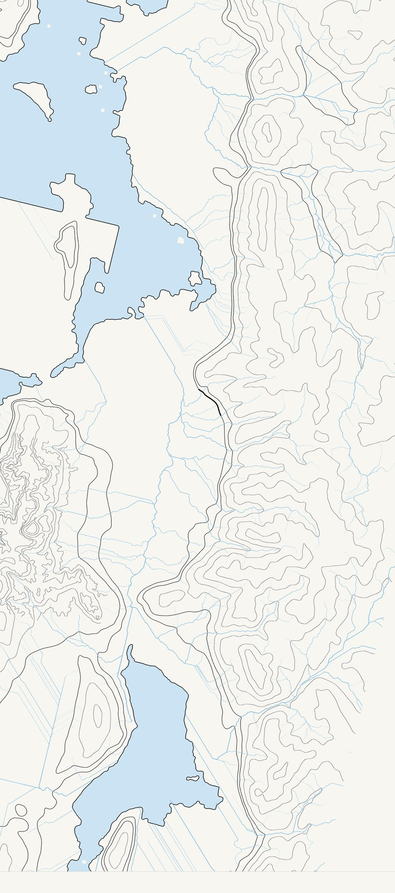
    <figcaption><span class="yr">Now</span>earth and water · the ground as it is</figcaption></figure>
  <figure>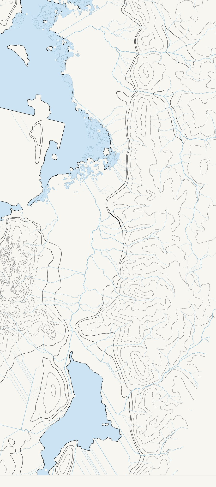
    <figcaption><span class="yr">Year one</span>an excavator and a change in the law · 277 mi of new waterline</figcaption></figure>
  <figure>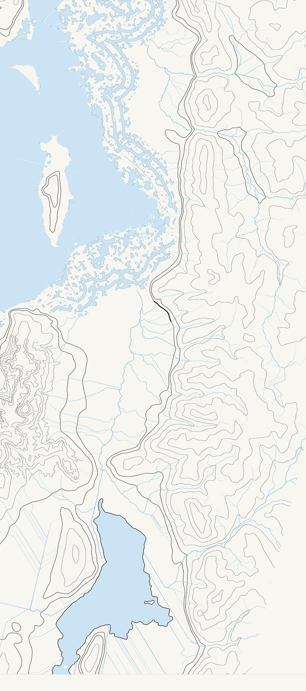
    <figcaption><span class="yr">Year fifty</span>the lake at grandpa's mark · 600 mi of shoreline</figcaption></figure>
</div>

<p style="margin-top:22px;max-width:70ch">Same frame, same scale, same tilt, same plate underneath
all three. <strong>Nothing moves but the water and what got built on the ground it left.</strong></p>


<!-- ── the bars ─────────────────────────────────────────────────────────────────────────────── -->
<div class="bars">

<details>
  <summary><span class="t">What it is</span>
    <span class="d">Nothing on this drawing was drawn.</span>
    <span class="more">Learn more</span></summary>
  <div class="body">
    <p>Every line is a measurement. The contours are the elevation of the ground at four heights.
    The lakes are the places with no slope, at an elevation a lake sits at. The rivers were found by
    pointing every cell downhill and letting one unit of rain fall on all of them.</p>
    <p><strong>The Jordan River runs north because the ground says so</strong> — not because anybody
    remembered that it does.</p>
    <p class="note">Which matters for one reason: the drawing can be checked. Anybody with the same
    public elevation tiles gets the same lines in the same places, forever. No seed, no model, no
    interpretation in the geometry.</p>

    <details class="sub"><summary>The one choice <span class="s">the contour levels are not an interval</span></summary>
      <div>
        <p>Every low line on this drawing is the surface of a lake.</p>
        <div class="grid">
          <div><p class="k">4,203 ft</p><p class="v">now</p><p class="s">the lake as the tiles found it</p></div>
          <div><p class="k">4,250 ft</p><p class="v">Gilbert</p><p class="s">the shoreline it held at</p></div>
          <div><p class="k">4,800 ft</p><p class="v">Provo</p><p class="s">the bench above the valley</p></div>
          <div><p class="k">5,090 ft</p><p class="v">Bonneville</p><p class="s">the high mark of the inland sea</p></div>
        </div>
        <p style="margin-top:22px">A regular interval would have said the range is tall. These say
        the water was here, and here, and here.</p>
        <p class="note">The mine appears without being asked for. It is a hole, and the ground is
        measured, so the same contours that wrap every mountain wrap this one going the other way:
        closed rings that get <em>smaller</em> as they go down. The arithmetic finds the largest
        thing ever built here without being told it exists.</p>
      </div>
    </details>
  </div>
</details>

<details>
  <summary><span class="t">How it was made</span>
    <span class="d">Eight steps, and only one of them is a choice.</span>
    <span class="more">Learn more</span></summary>
  <div class="body">
    <ol class="steps">
      <li><b>Download the ground</b><p><span class="num">208</span> elevation tiles from the public
        terrain set, stitched into <span class="num">3,328 × 4,096</span> samples about 57 metres
        apart. Height is packed into pixel colour:
        <code>R×256 + G + B/256 − 32768</code> metres.</p></li>
      <li><b>Find the water by looking for flatness</b><p>A lake is the only thing in a landscape
        with no slope. <strong>The elevation half of that test is load-bearing</strong> — flatness
        alone hands back the Bonneville Salt Flats, because at this resolution <em>a lake and the
        memory of a lake are the same shape.</em></p></li>
      <li><b>Trace the contours</b><p>Marching squares, interpolated between samples rather than
        stepping between them, so the line lands where the height actually crosses.</p></li>
      <li><b>Fill every hollow, but leave a whisper of slope</b><p>Water in an unfilled pit stops.
        Fill the pit flat and it stops again, because flat ground has no downhill. Priority-flood
        with a hair of epsilon does both. Without it: <span class="num">201,709</span> dead cells
        and not one river. With it: <span class="num">422</span>.</p></li>
      <li><b>Let it rain, then decide where a channel begins</b><p>Channels do not initiate on area
        — they initiate on stress, which goes as area × <strong>slope squared</strong>. Measured
        here: <span class="num">0.115</span> at a canyon head against <span class="num">0.001</span>
        on the valley floor. One constant is then right in both places.</p></li>
      <li><b>Walk each river down, longest first</b><p>From every head, steepest descent until it
        meets a lake, an edge, or a channel already drawn — so a tributary joins a trunk instead of
        replacing it.</p></li>
      <li><b>Cut the corners</b><p>Three passes of Chaikin. The limit of that process is a quadratic
        B-spline — <em>you do not differentiate a staircase, you integrate it.</em></p></li>
      <li><b>Write curves, not pixels</b><p>Douglas–Peucker discards every point the curve does not
        need, then each chain becomes cubic Béziers with tangents from its neighbours.</p></li>
    </ol>

    <details class="sub"><summary>The smooth pass <span class="s">why it is vector and not a bigger picture</span></summary>
      <div>
        <p class="big">Zooming in does not find a staircase. There are no steps in the file to
        enlarge.</p>
        <p>Every earlier version was a raster, and a raster has one resolution. The jagged curves at
        500% were never a fault in the drawing — that is what a curve looks like after it has been
        committed to a grid and magnified. <strong>You cannot smooth it afterwards; the information
        went when the grid took it.</strong></p>
        <p>So this goes back to the elevation and never lands on a grid at all. The tilt is applied
        to the coordinates rather than to a bitmap — <em>a rotated raster resamples and loses; a
        rotated coordinate is just a coordinate.</em></p>
        <p class="note">Deliberately not the print master. That file is 14,400 px of feathered
        raster and weighs hundreds of megabytes. This is the same drawing at working size.</p>
      </div>
    </details>
  </div>
</details>

<details>
  <summary><span class="t">The frame</span>
    <span class="d">Cropped by eye. It is a watershed boundary.</span>
    <span class="more">Learn more</span></summary>
  <div class="body">
    <p>The edges were set by hand months before anything was measured — pulled until the mine sat on
    one edge and the last resort on the other, because that was the width that looked right.</p>
    <div class="grid">
      <div><p class="k">Ground in frame</p><p class="v">4,038</p><p class="s">square miles</p></div>
      <div><p class="k">Reaching the lake</p><p class="v">100.0000%</p><p class="s">settled against a wider apron</p></div>
      <div><p class="k">Going to the Colorado</p><p class="v">0</p><p class="s">not one cell in 778,641</p></div>
      <div><p class="k">Removed</p><p class="v">none</p><p class="s">there was nothing to remove</p></div>
    </div>
    <p style="margin-top:22px">Every cell was jumped downhill to its terminus and asked whether that
    terminus is the one the lake itself drains to. <strong>Every cell in the frame arrives at the
    Great Salt Lake.</strong> None arrives anywhere else.</p>
    <p class="big">There is no other watershed in this picture.</p>

    <details class="sub"><summary>Chasing the water that left the picture <span class="s">a coarse apron, half a state</span></summary>
      <div>
        <p>Water running off the edge of the tiles cannot be followed, and unfollowable is not the
        same as elsewhere. So a second, coarser download was made — <strong>115 metres, covering
        half a state</strong>. It cannot draw anything; it answers where the water stops.</p>
        <table class="exits">
          <tr><td>north</td><td>Cache Valley, Bear Lake</td><td>→ the lake, by the Bear</td></tr>
          <tr><td>east</td><td>Kamas, Oakley — the far side of the crest</td><td>→ the lake, by the Weber</td></tr>
          <tr><td>south</td><td>Nephi, the Sevier reach</td><td>→ the lake</td></tr>
          <tr><td>west</td><td>Skull Valley, the salt desert</td><td>→ the lake floor. no outlet</td></tr>
          <tr><td>far east</td><td>Duchesne, the Uinta slope</td><td>the Colorado — outside the frame</td></tr>
        </table>
        <p style="margin-top:18px">All four directions come back. The only watershed boundary near
        this drawing is the Uinta divide, and it sits outside the crop.</p>
        <p class="big">Every resort on this map is on the lake's side of it.</p>
        <p>Park City, Deer Valley, Jordanelle, Heber, Kamas, Midway, Brighton, Solitude, Alta,
        Snowbird, Guardsman Pass at 9,754 feet. <strong>The divide does not cut the resorts in two —
        it misses them altogether.</strong></p>
      </div>
    </details>

    <details class="sub"><summary>What the frame does not hold <span class="s">the Bear, and why it matters</span></summary>
      <div>
        <p>It holds the bottom of the basin, not the whole of it. The lake drains about
        <strong>39,000 square miles</strong>; this drawing covers <strong>10,494 — 26.8%</strong>.
        The rest is upstream, and mostly north.</p>
        <p class="note">⭐ <strong>The Bear is the asterisk.</strong> The lake's largest single
        inflow, and not in the picture — it rises in Utah, runs into Wyoming, crosses into Idaho,
        turns around and comes back, governed by a three-state compact signed in 1958.</p>
        <p>Which matters for exactly one reason: <strong>everything inside this frame is Utah's
        alone.</strong> The Jordan, the Provo, the Weber and the Ogden all rise, run and end inside
        the state line.</p>
      </div>
    </details>

 </div>
</details>

<details>
  <summary><span class="t">The bill</span>
    <span class="d">Your right is a discount on diverting. It was never a discount on destroying.</span>
    <span class="more">Learn more</span></summary>
  <div class="body">
    <p class="note"><strong>It exists.</strong> Fifteen sections, 6,177 words, in enrolled form &mdash;
    <a href="bill.html">read it &rarr;</a></p>

    <p>Every citation was checked against a hundred and thirty scraped sections of live Utah Code,
    and the effective dates are printed on the page so a paralegal knows which text it was drafted
    against. <strong>Six of the things it was going to say turned out to already be law</strong>, so
    it cites them instead of drafting them. It got shorter every time we checked something.</p>

    <p>It opens with a finding rather than a rule, because a finding survives the amendment of
    everything else: <strong>of 778,641 elevation cells examined in the study frame, not one drains
    to the Colorado.</strong></p>

    <p>The target is <strong>4,205 feet</strong>, arrived at from litigation exposure rather than
    from ecology &mdash; which puts it five feet from a campaign that got there the other way.</p>

    <p class="note">What is <em>not</em> in it: the golf course, the dome, the death pit, the raker.
    Those live upstairs.</p>
  </div>
</details>

<details>
  <summary><span class="t">Three bills, no pipe</span>
    <span class="d">Cut out and standing alone. Not one of them mentions a pipeline.</span>
    <span class="more">Learn more</span></summary>
  <div class="body">
    <p>The instrument above wants a decade and a coalition. <strong>These three want a sponsor.</strong>
    They were cut out so none can be killed by the others. <strong>Two of them take something away.
    The third pays for what that costs</strong> &mdash; which is the order they have to arrive in,
    and the reason the first two can afford to appropriate nothing.</p>

    <details class="sub"><summary>Boots <span class="s">the data centre bill</span><a class="drafted" href="boots.html">973 words &rarr;</a></summary>
      <div>
        <p>No potable water to cool a machine. <strong>No consuming basin water to cool a machine</strong>
        &mdash; and in a terminal basin that is the one that matters. Bring 150% of your own peak load
        in renewable generation. Hold thirty-six hours of storage. Sign a grid agreement with the
        utility that serves you, <strong>and get paid for it.</strong></p>
        <p>It does not ask where your water came from. <em>Truck it, pipe it, distil it, buy it in
        jugs.</em> The chapter says so in a subsection.</p>
        <p class="note">Arizona has required a hundred-year assured water supply before you can build
        a subdivision since 1980. California has required solar on new homes since 2020.
        <strong>This asks a data centre for both.</strong> There is nothing new in it, which is the
        entire point.</p>
      </div>
    </details>

    <details class="sub"><summary>Dust <span class="s">the evaporative loss bill</span><a class="drafted" href="dust.html">732 words &rarr;</a></summary>
      <div>
        <p>Three numbers, all of them already on file: <strong>water in, water out, and your water
        bill.</strong> In minus out is what you destroyed. If the bill already covers it at the rate
        every commercial buyer here pays, you owe nothing &mdash; <strong>put the water back, or send
        it out inside a product, and nothing changes at all</strong>: the market stall, the dairy, the
        greenhouse, the brewery.</p>
        <p>It never names a crop, and it never asks where anything goes. The charge applies
        <em>&ldquo;without regard to the destination, market, or purchaser of any product&hellip; the
        product, crop, animal, beverage, container or process involved.&rdquo;</em> <strong>The bill
        does not know what alfalfa is, and it does not know what a state line is either.</strong>
        Evaporation simply happens to be the thing that never comes back.</p>
        <p>And it takes nothing. Section six says the right is not limited, conditioned, curtailed,
        forfeited or reduced; no crop is prohibited; no application may be denied by reason of it.
        <strong>Your rights are fine. You just cannot evaporate them at a discount.</strong></p>
        <p class="note">Not a tax and not a tariff &mdash; <strong>a floor.</strong> Anyone already
        paying retail for what they evaporate is compliant on the day it passes. <em>The only thing it
        ends is buying destruction at a discount</em>, one written down in 1903, for an economy that
        grew its own food, and never revisited.</p>
      </div>
    </details>

    <details class="sub"><summary>Spurs <span class="s">the appropriation</span><a class="drafted" href="dusty.html">1,478 words &rarr;</a></summary>
      <div>
        <p>The other two take the discount away. <strong>This one pays for the transition</strong>
        &mdash; because the transition is what bankrupts every farmer who has ever tried it, and
        every water-retirement scheme in the West has died on that one sentence.</p>
        <p>The state buys the capital cost of converting an irrigated acre, lends the rest at three
        percent, and then <strong>leases the water that conversion frees, every year, instream, all
        the way down to the lake.</strong> Three tiers. <em>The cheapest one buys an acre-foot for
        $129</em> against $609 to $25,000 to purchase the right outright.</p>
        <p>It never names a crop either. <strong>The tiers are acre-feet of verified depletion
        reduction and the capital each conversion needs</strong> &mdash; not what gets planted. A bill
        that pays for strawberries is a bill about strawberries, and it dies in committee alongside
        everyone who does not grow them.</p>
        <p class="note">Read per acre it is eighty-four percent of the ground going dry. Read per
        farm it is <strong>a 500-acre alfalfa outfit clearing $107,383 a year against the $47,250 it
        makes now</strong> &mdash; on sixteen percent of the water, with the family still standing on
        the ground.</p>
      </div>
    </details>
  </div>
</details>

<details>
  <summary><span class="t">Vexi &middot; the pipe</span>
    <span class="d">A third of the map and a fifth of the people share less than one percent of the water.</span>
    <span class="more">Learn more</span></summary>
  <div class="body">
    <p class="big">It is not a volume problem.<br>It is a plumbing problem.</p>

    <figure class="fig" style="margin-bottom:30px">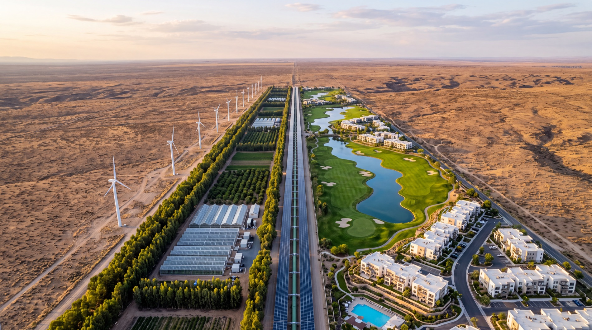</figure>

    <p class="note">⭐ <strong>It is not a pipe. A pipe is the cheapest thing in it.</strong> One
    trench carries water, power, fibre and sewer; the canopy over it makes the power and shades the
    crops; the cold in the line cools the buildings and then the people. <em>Every one of those pays
    for the trench, and the trench was going to be dug for one of them anyway.</em></p>

    <p>The Colorado. The megadrought. California drying up. The compact fight. The lawsuits. The
    Intermountain West. The dying lake. <strong>Seven names for one argument</strong> &mdash; and
    every one of them is downstream of a single number.</p>

    <p>Two thousand two hundred and eighty-five million acre-feet fall on the United States every
    year. The Colorado carries fifteen million of them. <strong>Forty million people, seven states,
    a treaty with Mexico, five and a half million irrigated acres and a century of litigation
    &mdash; on two-thirds of one percent.</strong> Add the Great Salt Lake basin and the Rio Grande
    and the whole dry half of the country is still under one.</p>

    <p class="note">And the megadrought in your feed &mdash; the lawsuits, the crisis, the dying
    lake &mdash; is fighting over <strong>a tenth of that</strong>. <em>A ninth of the little they
    already have.</em></p>

    <p>Which is then played up ten ways from Sunday as inevitable. Climate. Doom. The new normal.
    <strong>Some of that is true and none of it is the reason.</strong> A basin can be adequate on
    the annual mean and empty in August, and the arithmetic above does not say the drought is
    imaginary. <em>It says the shortfall is small enough to be a plumbing decision, and it has been
    treated as weather.</em></p>

    <h4>And the fence is the Rockies and the Sierra Nevada</h4>

    <p>Not a law. <strong>Two mountain ranges, and this basin sits between them.</strong></p>

    <p><strong>The Sierra is why it is dry.</strong> It takes the Pacific moisture on its western
    face and leaves the Great Basin standing in the shadow. <strong>The Rockies are why the water
    that exists is somewhere else</strong> &mdash; everything east of the Continental Divide runs to
    the Gulf or the Atlantic, and no legislature decided that. <em>The compacts are not the fence.
    They are the fence written down.</em></p>

    <p class="note">⭐ Which is the whole geography in one line: <strong>rain shadow on one side, a
    drainage divide on the other, and no outlet at the bottom.</strong> <em>Two fences and no
    door.</em></p>

    <p><strong>And it is a good fence.</strong> It is why the American West argues about water in
    the Supreme Court instead of at a headgate with rifles &mdash; you do not go to war over water
    that physically cannot reach you. Good fences made good neighbours here, and made water wars a
    thing that happens in other countries.</p>

    <p><strong>But a fence that stops a war also permits a hoard.</strong> The Great Lakes Compact
    bans diversion out of the basin and exempts water in containers of 5.7 gallons or less &mdash;
    so a pipeline is unlawful and a bottling plant is not. Ten states are organising the same thing
    on the Mississippi. <em>Nobody drafting either one was thinking about Utah, because the fence
    meant they never had to.</em></p>

    <p class="note">⭐ Which is the whole proposition, and it is not a legal one. <strong>The divide
    is an engineering cost. Once you are over it the rest is politics.</strong> <em>Nobody is asking
    anyone to take the fence down. A pipe is a door in it.</em></p>

    <p class="big">The Mississippi carries twenty-three times what the entire dry half of this
    country lives on, and puts it in the Gulf.</p>

    <p>There are 2.7 million miles of pipeline in this country for moving the things we burn. For
    moving water between basins there are perhaps thirty thousand. <strong>Ninety to one.</strong>
    <em>We built the plumbing for the thing we set on fire and not for the thing we drink.</em></p>

    <h4>And the Mississippi is in no danger from a thirsty West</h4>

    <p class="big">Four percent of one river would nearly double the water the entire arid West
    lives on.</p>

    <p>Seventeen and a half million acre-feet, against the nineteen the West has now. <strong>The
    river would be down four percent &mdash; inside its own year-to-year variation.</strong> It
    would not notice, and the dry half of the country would have twice what it has.</p>

    <p class="note">⭐ And this project is not asking for four percent. <strong>It is asking for one
    million acre-feet &mdash; twenty-three hundredths of one percent of the Mississippi.</strong>
    <em>A quarter of one percent, and the room hears &ldquo;pipeline&rdquo;.</em></p>

    <p class="big">Out here on the west side, we live off 4.4% of what a pioneer would have called
    waste.</p>

    <figure class="fig">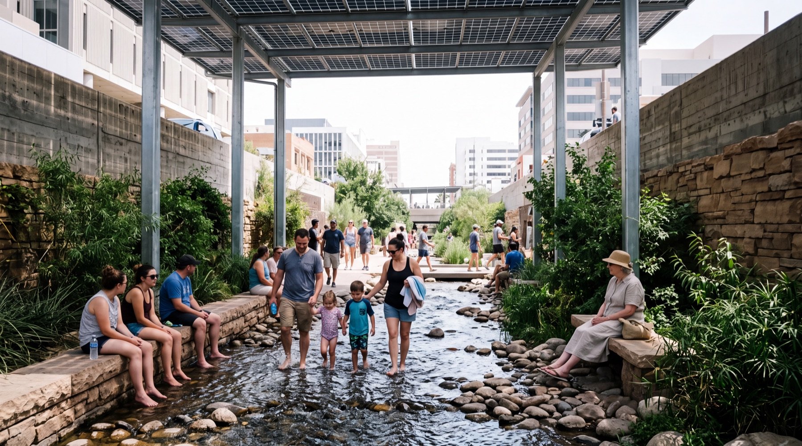</figure>

    <p class="note">And that is not a figure of speech. <strong>Under Utah law, water that reached
    the Great Salt Lake was not a beneficial use. It was legally waste</strong> &mdash; from the
    1903 water code until HB 33 in 2022. <em>When the law was written the lake was not at the
    table.</em></p>

    <h4>So it is not a rescue, and it was never sized like one</h4>

    <p class="note"><strong>The business plan.</strong> Twelve sections, 16,985 words &mdash;
    <a href="plan.html">read it &rarr;</a></p>

    <p>Every figure in it is traceable to a source, and the estimates say so on the same line. That
    was not a style choice: the first draft came back with thirty-four invented numbers out of
    sixty-six, in fluent, confident prose, and the checker passed every one of them.</p>

    <p>The finding that reorganised it: <strong>water is about seventeen percent of what a segment
    earns.</strong> The rest is power, cooling and heat. Which means this is not a water project with
    an energy business attached &mdash; <em>it is an energy business whose working fluid happens to
    end up in a lake.</em></p>

    <p>And the one that decides it: <strong>the asset is not price-sensitive, it is discount-rate
    sensitive.</strong> Fifteen and a half billion at three percent, nothing at all at seven. So it
    is not suitable for capital that needs a return inside a decade, and it says so on its own page
    rather than waiting to be told.</p>

    <p class="note">It also names the thing that would beat it: <strong>buying the water out is
    cheaper than building the pipe</strong>, at every price in the range. The answer is that a buyout
    divides a shrinking supply while the pipe adds to it &mdash; but the number is printed either
    way.</p>

    <h4>The name</h4>

    <p class="note">From <em>veho, vex&#299;</em> &mdash; I carried, I conveyed. The root of
    <em>vehicle</em>, and of <em>vector</em>, which means the one who carries.
    <strong>Not water. Not power. Conveyance.</strong></p>
  </div>
</details>

<details>
  <summary><span class="t">The press · year fifty</span>
    <span class="d">Every word is true and nothing in it is a lie.</span>
    <span class="more">Learn more</span></summary>
  <div class="body">
    <p>What the bills look like from inside, on the day they are being celebrated. <strong>No irony
    has been added.</strong> The restoration worked, the birds are back, the numbers are real, and
    the advertisements beside the articles are selling something that genuinely exists.</p>
    <p class="adnote"><button type="button" class="btn" id="adtog" aria-pressed="false">Hide advertisements</button>
      &nbsp;<span id="adstate">Advertisements shown — they are part of the piece.</span></p>

    <div class="press">
      <div class="mast"><b>THE GREAT SALT LAKE HERALD</b><span>Year Fifty · the water edition</span></div>

      <article>
        <p class="hed">Ten million birds. The count is the highest ever recorded here.</p>
        <p class="dek">Half a century after the export ban, the flyway is not recovering. It has recovered.</p>
        <p class="byline">Antelope Island · staff report</p>
        
        <figcaption>First light over the belt. The shallows are the whole reason — brine shrimp need water this thin, and so does everything that eats them.</figcaption>
        <div class="cols">
          <p>The lake has stood within a foot of the same mark for eleven consecutive years, the longest stable period since records began. Salinity is holding in the band the brine shrimp want. The flies are back on the shore in numbers people under forty have never seen.</p>
          <p><strong>Nobody built anything to achieve it.</strong> No dam on any river in this basin, no diversion, no pump, no new reservoir. Two laws were passed and one pipe was left switched off, and the ground did the rest at its own pace over fifty years.</p>
          <p>The economic case turned out to be the easy part. Dust mitigation alone was costing the valley more each year than the entire agricultural output the ban displaced, and that was before anybody counted the tourism.</p>
          <p>What nobody predicted was the shoreline. Six hundred miles of it now, almost all of it new, most of it wet on both sides.</p>
        </div>
      </article>

      <div class="adbox">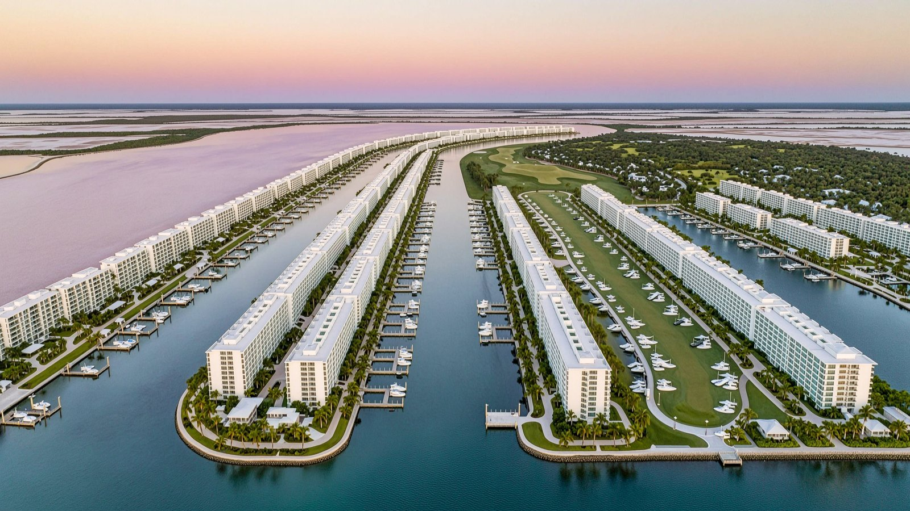
        <div class="inner">
          <p class="brand">The Belt &nbsp;·&nbsp; now leasing</p>
          <h4>Water on every side of everything.</h4>
          <p class="sub2">Six hundred miles of engineered shoreline, and your slip is at the bottom of the garden.</p>
          <ul><li>Deep-water moorage to 40 ft · direct channel access</li>
              <li>Wetland frontage — protected in perpetuity, at no cost to the owner</li>
              <li>Nine minutes to the interchange. One road in.</li></ul>
          <p class="fine">Wetland protection secured under the restoration act. Channel depths maintained by the district. All parcels freehold. Public access to the shoreline is guaranteed by statute at designated points.</p>
        </div>
      </div>

      <article>
        <p class="hed">Pop the champagne: the lake is back where your grandfather left it.</p>
        <p class="dek">4,212 feet. Antelope is an island again for the first time in living memory.</p>
        <p class="byline">Syracuse · the waterfront desk</p>
        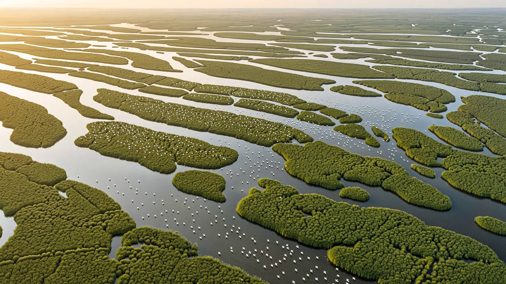
        <figcaption>The belt from the air. Every channel was cut with an excavator and the spoil left beside it — conservation of mass, free, and local.</figcaption>
        <div class="cols">
          <p>The causeway crowd started arriving before six. By ten there were boats in the channel trailered in from three states, and by noon the marina had run out of everything.</p>
          <p><strong>It is difficult to overstate how completely this was supposed to be impossible.</strong> Fifty years ago the accepted position was that the lake was in terminal decline, that the arsenic in the exposed bed was a public health emergency waiting for a windy spring, and that nothing short of a federal project could change it.</p>
          <p>What changed it was a legislature deciding that water grown into hay and shipped out of a terminal basin was not a use, and a second bill saying that anybody taking water for something other than food had to buy it at the cost of lifting it.</p>
          <p>The rest is gravity, which was always free.</p>
        </div>
      </article>

      <div class="adbox">
        <div class="inner">
          <p class="brand">Grandpa's Mark &nbsp;·&nbsp; the links at the belt</p>
          <h4>Built on ground that did not exist in your lifetime.</h4>
          <p class="sub2">Eighteen holes on made land, water in play on sixteen, and every yard certified restoration.</p>
          <ul><li>Championship links · water on both sides of the outward nine</li>
              <li>Habitat credits retired against every acre placed</li>
              <li>Members' channel · clubhouse moorage · no road on the property</li></ul>
          <p class="fine">Constructed on beneficially reused fill under the restoration act. Habitat mitigation verified annually. Cap integrity monitored under permit. Fly-in guests: see the district for approach and mooring.</p>
        </div>
      </div>

      <article>
        <p class="hed">The largest restoration in North America is also the most profitable land in the state.</p>
        <p class="dek">Both sentences are true, and the second is why the first happened.</p>
        <p class="byline">Farmington Bay · analysis</p>
        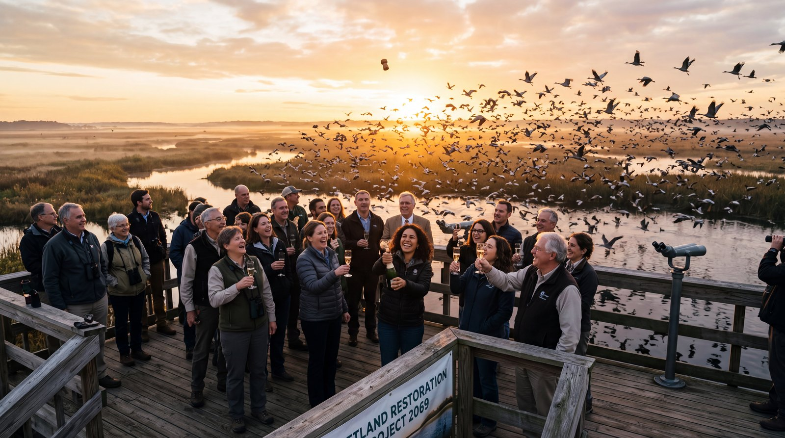
        <figcaption>Opening morning at the restoration project. Access to the boardwalk is public at designated points.</figcaption>
        <div class="cols">
          <p>The finance is not complicated and was never hidden. Making an island produces two things at once — a channel and the land beside it — and only one of them has ever had to be paid for.</p>
          <p>So the restoration paid for the frontage and the frontage paid for the restoration, and after the first belt sold out the second was financed against the first before a yard was moved.</p>
          <p><strong>There is nothing on this drawing to object to.</strong> The marsh is real, the acreage verified, the birds counted by people with no stake in the number, and every parcel carries habitat obligations that outlive its owner.</p>
          <p>The only question left is who gets to stand on it, and that is not a question the deed answers. It is a question about a gate, and a gate is not a wetland issue.</p>
        </div>
      </article>
    </div>

    <p style="margin-top:26px">Nothing in that newspaper is false. <strong>Read it in the other
    direction and it is a prospectus.</strong></p>
    <p class="note">⭐ <em>A policy that works defeats itself by working.</em> The fix removes the
    visible evidence of the problem, the evidence was the constituency, and the constituency was the
    only thing holding the fix in place.</p>
  </div>
</details>

<details>
  <summary><span class="t">Counsel</span>
    <span class="d">On the matter of the frame.</span>
    <span class="more">Learn more</span></summary>
  <div class="body">
    <div class="counsel">
      <p><b>Vogel</b> My client cropped a watershed by eye. I want that noted, because it will not be
      noted anywhere else. He did not consult a hydrological survey. He did not have one. He moved
      the edges of a picture until the composition sat correctly — the mine on one edge, the last
      resort on the other — and produced the boundary of a drainage basin. Not approximately.
      <strong>Four thousand and thirty-eight square miles, seven hundred and seventy-eight thousand
      cells, and not one of them drains anywhere but the Great Salt Lake.</strong> One might
      reasonably call that —</p>
      <p><b>Trawman</b> A symptom.</p>
      <p><b>Vogel</b> I was going to say a gift.</p>
      <p><b>Trawman</b> You were going to say a gift, and that is the error the record keeps making,
      so let us make it properly once and be done. <strong>This is a disability. It is not an
      asset.</strong></p>
      <p><b>Trawman</b> My colleague would like the tribunal to admire a man who can see a watershed
      in the shape of a hillside. Admire it if you like. Then consider what it is to carry that
      apparatus through an ordinary afternoon — into a shop, onto a street, past a junction, through
      a conversation — <strong>where every object in view arrives with its own correction attached,
      unbidden, at full volume, and none of them can be acted on.</strong></p>
      <p><b>Trawman</b> He is not making this work because he can. He is making it because it is the
      only work available to him, and because it is done alone, at his own pace, on a surface that
      does not mind being looked at for eleven hours.</p>
      <p><b>Vogel</b> The debilitating part being —</p>
      <p><b>Trawman</b> The intelligence. Yes. That is not a boast and I would ask that it not be
      written up as one. <em>A capacity that has nowhere to go is not a talent, it is a load.</em>
      Going out in public is painful in direct proportion to how much of it you can see, and the
      clinical term for a man who arrives with a solution to everything he looks at is
      <strong>delusional</strong>.</p>
      <p><b>Trawman</b> There is no diagnosis for being right about the drains.</p>
      <p><b>Vogel</b> Then may I put the frame to its actual use, since my colleague has finished
      being sorry for my client.</p>
      <p><b>Trawman</b> Put it.</p>
      <p><b>Vogel</b> Every serious proposal about water in this state dies the same death, and it
      dies in the first meeting. Somebody says <em>the Colorado.</em> The Compact, the Upper Basin
      allocation, seven states, two countries, thirty sovereign nations, a century of perfected
      senior rights. Naming it ends the conversation — because <strong>the size of the obstacle is
      allowed to stand in for an argument about why nothing can be done.</strong></p>
      <p><b>Vogel</b> It does not apply here. Not partly. <strong>Not one cell in this frame drains
      to the Colorado.</strong> The nearest divide that does is the Uinta slope, and it lies outside
      the picture. Every drop of water in this basin falls in Utah, moves in Utah, is used in Utah
      and evaporates in Utah, having crossed no line any other party has standing to argue about —</p>
      <p><b>Trawman</b> No. Stop there, because that last sentence is the one that will be taken
      apart, and it will be taken apart correctly.</p>
      <p><b>Trawman</b> <strong>The frame holds 26.8% of this basin.</strong> Ten and a half thousand
      square miles of a basin that runs to thirty-nine. It is the lower end — where the water is used
      and where it finishes — and it is not where most of it comes from.</p>
      <p><b>Trawman</b> The largest single inflow this lake has is the Bear, and the Bear is not in
      the picture. It rises in Utah, runs up into Wyoming, crosses into Idaho, turns around and comes
      back — governed by <strong>the Bear River Compact, three states, signed in 1958.</strong> The
      Colorado is not the problem, and my colleague has replaced it with a smaller one rather than
      none.</p>
      <p><b>Vogel</b> Then let me narrow it, since narrowing it costs nothing.</p>
      <p><b>Vogel</b> <strong>Everything in the frame is Utah's alone.</strong> The Jordan, the
      Provo, the Weber, the Ogden — every one rises, runs and ends inside the state line, and every
      acre they irrigate sits under a single legislature. The two laws bind the ground in this
      drawing. They do not need the Bear, and they do not need anybody's permission to start.</p>
      <p><b>Trawman</b> That I concede, and it is worth more than the version he wanted. The
      jurisdiction over what is drawn here is entire.</p>
      <p><b>Trawman</b> Which removes the excuse without removing the difficulty, and I would not
      have the record confuse those. <em>It was never actually about the Colorado.</em> The Colorado
      is what you say when the real answer is that somebody would have to be told no.</p>
      <p><b>Vogel</b> Two intrastate laws.</p>
      <p><b>Trawman</b> Two intrastate laws, one pipe, and no one left to blame it on.</p>
    </div>

    <blockquote class="say">
      <p>So I can finger-paint utopia. But nobody will listen to the patient in the case study.</p>
      <p>My crayons are too dull in the mental hospital in the zoo.</p>
      <p class="q">Do the castle walls resemble prison walls to you too?</p>
    </blockquote>

    <p style="margin-top:26px">They do, and it is not a figure of speech — <strong>it is the same
    wall.</strong> A castle wall and a prison wall have identical geometry, identical materials and
    identical cost. Neither can be told from the other by looking at it, measuring it, or drawing it.
    The only difference is which side you were standing on when it went up, and <em>that is not a
    property of the wall.</em></p>
    <p class="note">A map has notation for water and for ground. It has none for a key, none for a
    door, and none for which side of a wall a person is standing on. <strong>The exclusion is never
    in the drawing. It is always in the room.</strong></p>
    <p>Which is why the drawing is made of measurements and not assertions. <strong>The elevation
    data does not know who is holding it.</strong> Anybody can download the same tiles, run the same
    eight steps, and get the same lines — and at that point the argument stops depending on whether
    the person making it is credible.</p>
    <p class="note">The whole method, stated plainly: <em>put the case in a form that survives the
    messenger being dismissed.</em> A contour is not a claim. It is a height, and it is checkable by
    a stranger who has already decided not to trust you.</p>
  </div>
</details>

</div>

<!-- ── the next wall ────────────────────────────────────────────────────────────────────────── -->
<h2 style="margin:76px 0 10px">One more band</h2>
<h3>Blue, then pretty, then gone.</h3>
<p style="max-width:68ch">The lake works, so the law protecting it stops looking necessary. The
export resumes. The response to the water falling is not to stop but to <strong>trench a little
deeper</strong> and sell the strip the lake has just given up, because that strip is free, flat and
instantly waterfront.</p>

<div class="three">
  <figure>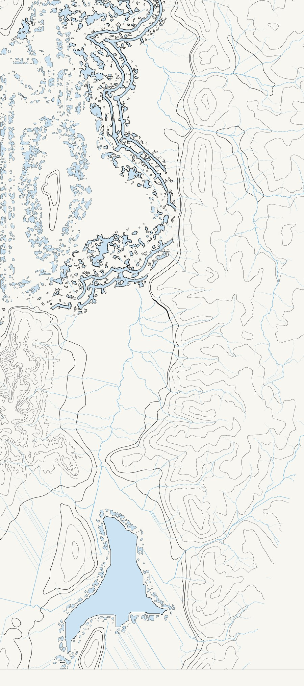
    <figcaption><span class="yr">The second boom</span>still blue · still working · the most profitable ring yet</figcaption></figure>
  <figure>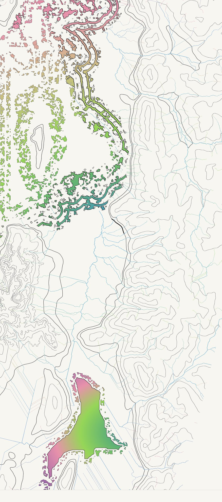
    <figcaption><span class="yr">The pretty one</span>colour is the last instrument · nobody dyed anything</figcaption></figure>
  <figure>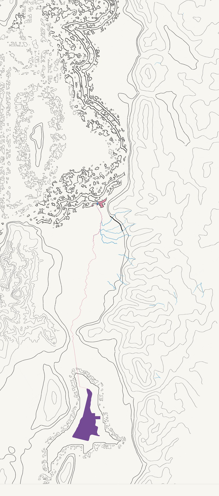
    <figcaption><span class="yr">The dead lake</span>one canal · one marina · one pool</figcaption></figure>
</div>

<p style="margin-top:22px;max-width:68ch">Maintenance is the hinge and it never appears in a
photograph. A channel wants dredging. A berm wants topping. A pump wants power. <strong>Every one of
those costs rises as the water falls</strong> — and the district that owes them is funded by the
frontage, which is worth less every year for the same reason.</p>
<p class="big">The colour arrives on its own. Nobody dyes anything.</p>

<div class="bars">

<details>
  <summary><span class="t">The decisions</span>
    <span class="d">Seven of them. Not one is wrong when it is made.</span>
    <span class="more">Learn more</span></summary>
  <div class="body">
    <p>There is no villain in this sequence and no meeting where a reasonable person should have
    objected. Each decision is defensible on the evidence available on the day it is taken, and each
    one is a precondition for the next.</p>

    <details class="sub"><summary>01 · The ban is relaxed <span class="s">because it worked</span></summary>
      <div><p><strong>The decision:</strong> seasonal flexibility on the export prohibition, on the
      recommendation of the district, after eleven years of stable lake level.</p>
      <p>⭐ <em>A policy that works defeats itself by working.</em> The fix removed the visible
      evidence of the problem; the evidence was the constituency; the constituency was the only
      thing holding the fix in place. Ozone. Flood control. Vaccines. <strong>Nobody in the room
      notices, because the room is full of good news.</strong></p></div>
    </details>

    <details class="sub"><summary>02 · Trench deeper instead of stopping <span class="s">the cheapest available response</span></summary>
      <div><p><strong>The decision:</strong> capital maintenance dredging, approved unanimously,
      funded from reserves.</p>
      <p>The water falls a foot. Two choices: reverse the policy that everyone can see is producing
      prosperity, or deepen the channel by a foot. The second costs less than the first year of the
      first. It is also entirely reversible, which is the argument that carries the vote.</p></div>
    </details>

    <details class="sub"><summary>03 · Sell the strip the lake gave up <span class="s">free, flat, and instantly waterfront</span></summary>
      <div><p><strong>The decision:</strong> release of the exposed bed for development, with
      habitat mitigation attached at a ratio the ecologists asked for.</p>
      <p>The second ring is more profitable than the first, because the earthwork was done by the
      retreat. <strong>The restoration paid for the frontage and the frontage paid for the
      restoration</strong>, and the third belt is financed against the second before a yard moves.</p></div>
    </details>

    <details class="sub"><summary>04 · Mitigation becomes the product <span class="s">the credit is worth more than the acre</span></summary>
      <div><p><strong>The decision:</strong> tradeable habitat credits, so that restoration can be
      financed by parties who are not doing the restoring.</p>
      <p>Correct, standard, and it works. It also means the quantity being optimised is the
      <em>credit</em>, and a credit is a number on a register. <em>Nothing on the ground has to
      change for the register to balance.</em></p></div>
    </details>

    <details class="sub"><summary>05 · The cap becomes the amenity <span class="s">the worst material on earth is the cheapest island</span></summary>
      <div><p><strong>The decision:</strong> beneficial reuse permitting for graded fill, including
      material that has to go somewhere regardless.</p>
      <p>A state that already imports low-level waste for revenue does not need a new idea here. It
      needs a bigger hole and a permit that says <em>beneficial reuse</em>. <strong>The cap is not a
      cost of the project. It is the project</strong> — and it is invisible, permanently, from every
      angle a person will ever see it from.</p></div>
    </details>

    <details class="sub"><summary>06 · Maintenance is means-tested <span class="s">the district cannot dredge everything</span></summary>
      <div><p><strong>The decision:</strong> prioritised channel maintenance, ranked by rateable
      value, because the rates fund the dredging.</p>
      <p>This is the one that does the sorting, and it is the one nobody argues with, because the
      alternative is dredging channels that nobody is paying for. <strong>The channels that stay
      open are the channels attached to the money.</strong> Written down as a formula, defensible in
      any hearing, and identical in effect to a decision nobody would sign.</p></div>
    </details>

    <details class="sub"><summary>07 · Managed decline is adopted as policy <span class="s">and it is the only sane choice left</span></summary>
      <div><p><strong>The decision:</strong> the lake is no longer held at a level. It is managed
      down to a defensible one, on a schedule, with dust suppression funded from the sale of what
      the retreat exposes.</p>
      <p>By this point every alternative is worse and the arithmetic says so. Holding the level
      would cost more than the entire assessed value of the shoreline it protects. <strong>Refusing
      to manage the decline does not prevent the decline. It only removes the schedule.</strong></p></div>
    </details>
  </div>
</details>

<details>
  <summary><span class="t">Counsel · on inevitability</span>
    <span class="d">Whether managed decline was the only sane choice.</span>
    <span class="more">Learn more</span></summary>
  <div class="body">
    <div class="counsel">
      <p><b>Trawman</b> I will take the unpopular side, since it is the one that is correct, and I
      will state it in one sentence so nobody has to wait for it. <strong>By the time managed decline
      is adopted it is the only sane choice available, and every person who votes for it is doing
      the responsible thing.</strong></p>
      <p><b>Vogel</b> My colleague is defending the ending.</p>
      <p><b>Trawman</b> I am defending the people in it, which is different, and it is the part this
      drawing is at risk of getting wrong. Look at the seven decisions. Take any one of them to a
      hearing on the day it was made, with the evidence available on that day, and it passes.
      Deepening a channel by a foot is cheaper than reversing a policy that is visibly producing
      prosperity. Ranking maintenance by rateable value is the only method that funds itself.
      <em>None of these are the acts of fools or of villains.</em></p>
      <p><b>Vogel</b> And yet.</p>
      <p><b>Trawman</b> And yet. Because the fault is not in any decision, it is in the fact that the
      instrument never contains the word <strong>enough</strong>, and there is no meeting at which
      the absence of that word is on the agenda. A thing that is nobody's item does not get raised.
      It does not fail a vote — <em>it never reaches one.</em></p>
      <p><b>Vogel</b> Then say plainly what my colleague is conceding, because he has just conceded
      the whole case for the other side.</p>
      <p><b>Trawman</b> I am aware of what I have conceded. <strong>If every step is correct and the
      outcome is a dead lake, the error is upstream of every step.</strong> It is in the shape of the
      instrument, not in the conduct of anyone operating it. Which is a far worse finding than
      corruption, because corruption has a remedy and this does not.</p>
      <p><b>Vogel</b> So was it inevitable.</p>
      <p><b>Trawman</b> Not inevitable. <em>Overwhelmingly likely, at every branch, for good
      reasons.</em> Which in a hundred-year sequence is the same thing wearing better clothes.</p>
      <p><b>Trawman</b> And I will finish by observing what managed decline actually manages. It does
      not manage the water — the water is doing what water does. It manages the <strong>schedule</strong>,
      so that the losses arrive in an order somebody has planned for, to people whose names are
      already on a list, in a sequence that can be described in a report as orderly.</p>
      <p><b>Vogel</b> Whose names.</p>
      <p><b>Trawman</b> The same five. In the same order. For the same reason.</p>
    </div>
  </div>
</details>

<details>
  <summary><span class="t">The advertisements</span>
    <span class="d">Same copy. The water has changed colour.</span>
    <span class="more">Learn more</span></summary>
  <div class="body">
    <p>These ran in the same paper, thirty years later, from the same district, with almost the same
    wording. <strong>Nothing has been withdrawn.</strong> The claims are still true — they have
    simply acquired the fine print that always applied to them.</p>
    <p class="adnote"><button type="button" class="btn" id="adtog2" aria-pressed="false">Hide advertisements</button>
      &nbsp;<span id="adstate2">Advertisements shown.</span></p>

    <div class="adbox">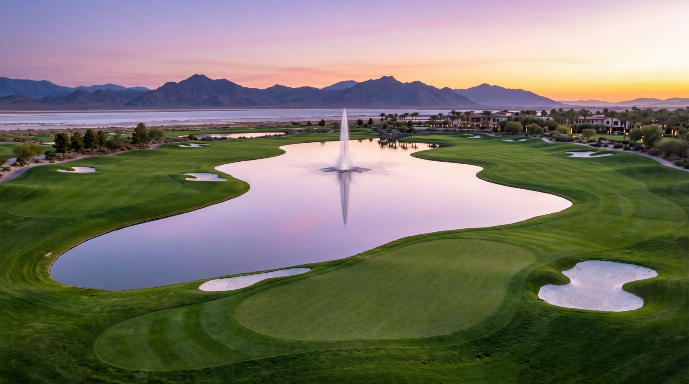
      <div class="inner">
        <p class="brand">Grandpa's Mark &nbsp;·&nbsp; the links at the belt</p>
        <h4>Still the best sunset in the state.<span style="color:var(--blue)">*</span></h4>
        <p class="sub2">Eighteen holes on made land, water in play on sixteen of them,<span style="color:var(--blue)">*</span>
        and every yard of it certified restoration.<span style="color:var(--blue)">*</span></p>
        <ul><li>Championship links · water on both sides of the outward nine<span style="color:var(--blue)">*</span></li>
            <li>Habitat credits retired against every acre placed<span style="color:var(--blue)">*</span></li>
            <li>Members' channel · clubhouse moorage<span style="color:var(--blue)">*</span> · no road on the property</li></ul>
        <p class="fine"><strong>*</strong> Colour is naturally occurring and is not an indicator of water quality.
        <strong>*</strong> "In play" includes seasonal and residual water features. <strong>*</strong> Restoration
        certification refers to the permitting basis of the fill and is not a statement about present habitat value.
        <strong>*</strong> Water on the outward nine is subject to the district's maintenance priority schedule.
        <strong>*</strong> Habitat credits were retired at the time of placement and are not re-assessed.
        <strong>*</strong> Moorage subject to channel depth. Channel depth subject to the schedule. The schedule is
        published annually. Contact with the water is not recommended without protection. See the district for
        current advisories.</p>
      </div>
    </div>

    <div class="adbox">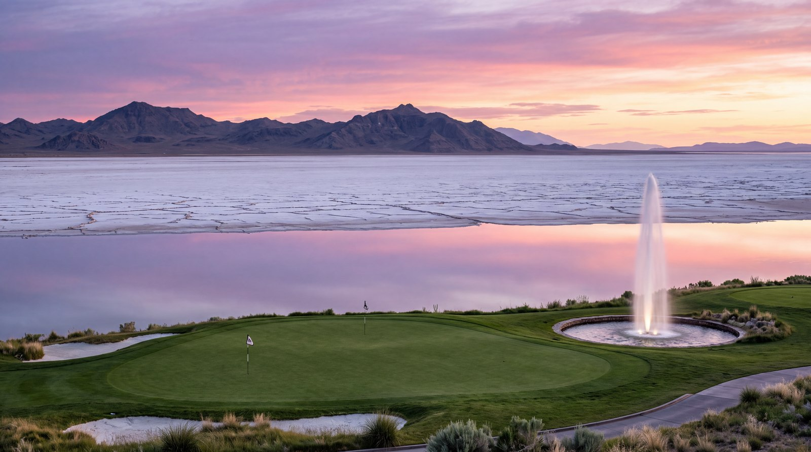
      <div class="inner">
        <p class="brand">The Belt &nbsp;·&nbsp; final release</p>
        <h4>Water on every side of everything.<span style="color:var(--blue)">*</span></h4>
        <p class="sub2">The last waterfront parcels on the last managed channel in the valley.</p>
        <ul><li>Deep-water moorage to 40 ft<span style="color:var(--blue)">*</span> · direct channel access<span style="color:var(--blue)">*</span></li>
            <li>Wetland frontage — protected in perpetuity,<span style="color:var(--blue)">*</span> at no cost to the owner</li>
            <li>Nine minutes to the interchange. One road in.</li></ul>
        <p class="fine"><strong>*</strong> "Water on every side" describes the parcel as designed and platted.
        <strong>*</strong> Depths stated are design depths at construction. <strong>*</strong> Channel access is
        maintained where the channel is maintained. <strong>*</strong> The perpetual protection applies to the
        designation of the land as wetland and does not warrant the presence of water. <strong>*</strong> The
        fountain is ornamental and is not an aeration system. Dust advisory days are published by the district.
        <strong>*</strong> Public access to the shoreline remains guaranteed by statute at designated points.</p>
      </div>
    </div>

    <div class="adbox">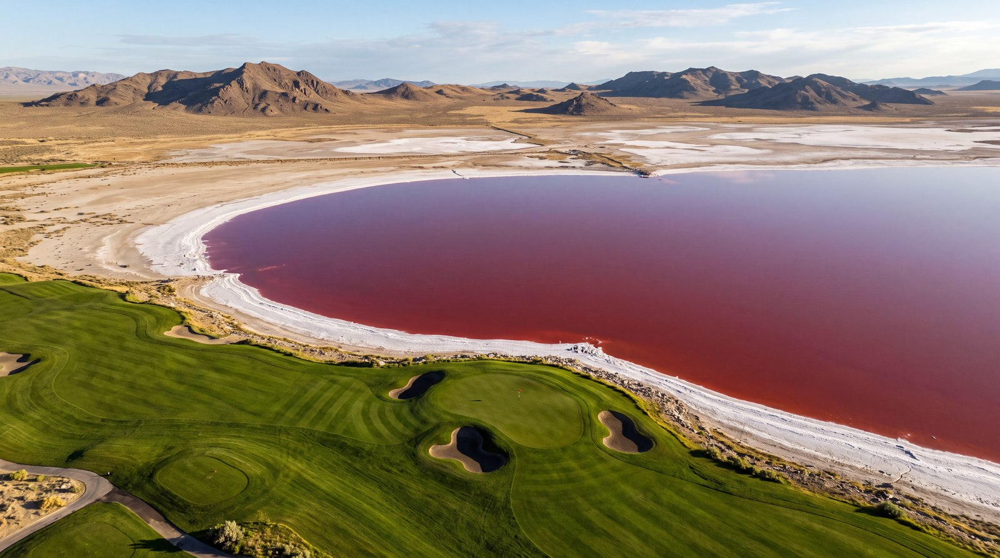
      <div class="inner">
        <p class="brand">Grandpa's Mark &nbsp;·&nbsp; the signature hole</p>
        <h4>Nowhere else on earth looks like this.<span style="color:var(--blue)">*</span></h4>
        <p class="sub2">The most photographed green in the state, and it is still open.<span style="color:var(--blue)">*</span></p>
        <ul><li>Championship green, water carry on the approach<span style="color:var(--blue)">*</span></li>
            <li>Full irrigation maintained year-round<span style="color:var(--blue)">*</span></li>
            <li>No tee time required after 2pm<span style="color:var(--blue)">*</span></li></ul>
        <p class="fine"><strong>*</strong> The colour is produced by halophilic micro-organisms and is
        a natural feature of hypersaline water. <strong>*</strong> "Open" refers to the course.
        <strong>*</strong> Balls entering the water are not retrieved and should be considered lost.
        <strong>*</strong> Irrigation is supplied under the district's priority schedule and is not
        drawn from the adjacent water body. <strong>*</strong> Afternoon availability reflects the
        published exposure guidance. Contact with the water is not recommended. Rinse stations at the
        clubhouse.</p>
      </div>
    </div>

    <p class="note">⭐ <strong>Not one of those asterisks is a lie, and not one of them was added
    later.</strong> Every qualification was true in the first advertisement too — it simply did not
    need saying while the water was blue. <em>The fine print is not the deception. The fine print is
    the first draft, finally legible.</em></p>
    <p class="note">⚠ And the last one is the tell. <strong>The irrigation is not drawn from the
    adjacent water body</strong> — which is a sentence written to reassure, and which says, if you
    read it in the other direction, that the green beside the lake is watered from somewhere else.</p>
  </div>
</details>

<details>
  <summary><span class="t">The last release</span>
    <span class="d">The same prospectus. Nothing about it has changed except the product.</span>
    <span class="more">Learn more</span></summary>
  <div class="body">
    <p>This is the identical pitch — the same district, the same structure, the same three bullets
    and the same fine print — issued once there is nothing left to sell but shade.</p>
    <p class="note">⭐ <strong>Read the two side by side and the copy barely moves.</strong> Water on
    every side became shade on every side. The slip became the frontage. <em>One road in</em> did not
    need rewriting at all. The product was never the water — <strong>the product was the thing
    everybody else could not get</strong>, and the sentence works whatever that turns out to be.</p>

    <div class="adbox">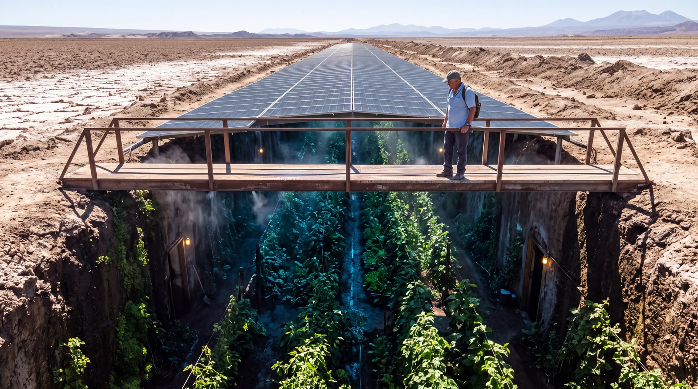
      <div class="inner">
        <p class="brand">The Belt &nbsp;·&nbsp; Trench One &nbsp;·&nbsp; final release</p>
        <h4>Shade on every side of everything.</h4>
        <p class="sub2">Ninety feet down, eleven degrees cooler, and every square foot of it under
        panel. The last address in the valley you do not have to leave in July.</p>
        <ul><li>Full canopy · 100% shaded frontage · no direct sun at any hour</li>
            <li>Passive cooling from the mass · humidity recovered and returned to the growing wall</li>
            <li>Produce wall at your door · nine minutes to the interchange · one road in</li></ul>
        <p class="fine">Constructed in the decommissioned channel under the district's adaptive reuse
        programme. Canopy generation is sold to the grid and offsets the service charge. Growing wall
        yields are shared under the residents' agreement. Surface access is unrestricted and remains
        guaranteed by statute at designated points. Exposure guidance applies above grade. See the
        district for current advisories.</p>
      </div>
    </div>

    <p style="margin-top:22px">And it is <strong>good.</strong> That is what makes it work as the
    ending rather than as a punchline. The trench is genuinely cooler, the canopy genuinely pays for
    itself, the growing wall genuinely feeds the people living in it, and the humidity that would
    have evaporated off a lake is caught and used instead of lost to the sky.</p>
    <p class="big">Somebody finally built the thing that works, in the bottom of a canal, after the
    lake was gone.</p>
    <p class="note">⚠ <strong>Every element of it was available fifty years earlier.</strong> Shade,
    mass, humidity recovery, growing walls, and a canopy that pays its own service charge — none of
    that needed the lake to die first. It needed the ground to be worth so little that somebody was
    allowed to try. <em>The engineering was never the constraint. The land price was.</em></p>
    <p>Which is the last inversion in the sequence, and the quietest one: <strong>the most liveable
    address in this valley is the one nobody wanted</strong>, and it is at the bottom of a ditch
    that was dug to sell waterfront.</p>
  </div>
</details>

<details>
  <summary><span class="t">One star</span>
    <span class="d">Great Salt Lake Preserve &amp; Links — public course.</span>
    <span class="more">Learn more</span></summary>
  <div class="body">
    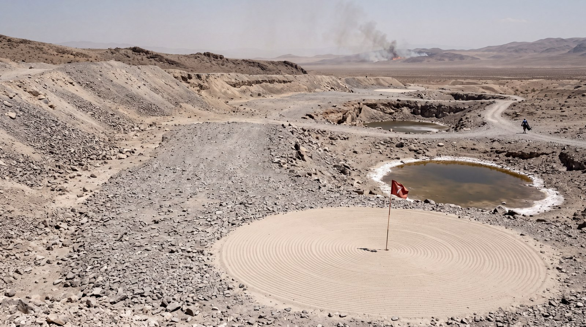
    <p style="font-size:12px;color:#999;margin:0 0 6px;line-height:1.5">The 4th green. The rake is
    chained to the tee box. The nearest shade is seven hundred square miles away.</p>

    <div class="rev">
      <p class="stars">★☆☆☆☆</p>
      <p class="who">Local Guide · 41 reviews · played on a Tuesday</p>
      <p style="font-size:12px;color:#999;margin:0 0 14px">Photo added by reviewer</p>
      <p>Worst course I have ever played and I have played Wendover.</p>
      <p>First off there is no fairway. I want to be clear about this because the website has a picture of a fairway. There is no fairway. It is all bunker. The whole thing is bunker. They call it "the largest continuous sand feature in North America" on the scorecard like that is a brag.</p>
      <p>Second, <strong>you have to rake the green before you putt.</strong> Not after. Before. Because nobody rakes after. There is a sign about it. The rake is chained to the tee box so you rake, then walk back and re-tee, then walk up again. Took us two hours and ten minutes to play three holes and one of those was a par 3.</p>
      <p>Also the greens are not green. Nobody mentions this anywhere. They are beige. Everything is beige. The pro shop guy said "it's 0-scaped" like that was a normal thing to say to a person.</p>
      <p><strong>The clubs spark.</strong> They give you flint-coated irons at the counter, no choice, and when you hit rock — which is every shot, see above re: bunker — it throws sparks. There were four small fires going on the back nine. I asked and the guy said <em>"that's the weed control."</em> He was not joking. There is a burn permit framed by the register.</p>
      <p><strong>Also it is a different course depending on when you go.</strong> We booked April. The entire thing was under water. Not flooded — <em>designed</em> to be under water, they call it "the seasonal water feature." Every hole is a water hazard. The only dry ground is islands of rock with birds on them and I mean an unreasonable number of birds, and I want to be delicate here but you are not walking on rock by the back nine. Brought different shoes the second time.</p>
      <p>Went back in August. Same course. Now it is gravel and dust. All of it. They had not moved anything, the water was simply gone, and the birds with it. So it is a lake for four months and a quarry for eight and there is about a week in between where I am told it is genuinely lovely.</p>
      <p><strong>The one real tip:</strong> hire a raker. There are local artists at the gate who will go ahead of you and rake the zen garden on the green so you are not doing it yourself, and — this is the part — they level you a spot on the fairway to swing from. Rock does not hold a stance. You cannot play the course without one and nobody tells you this in advance. Ours was called Miguel and he was worth every dollar and I would rate him five stars separately.</p>
      <p>And it is not one guy, is the thing. By the second visit I had <strong>five people on staff</strong> and that is on the low end for a foursome. You need a raker per player because you cannot share one. You need a shade holder, because there is no shade. There is not a tree in seven hundred square miles and the parasol guys know it and they are not cheap in July.</p>
      <p>Then there is the mask. Everyone wears one, it is not optional, and somebody has to carry the spare cartridges. The <strong>HUD helmet</strong> I did buy rather than rent — UV index, particulate count, and a little number counting down your exposure minutes for the day, which is genuinely useful and also the single most upsetting object I have ever worn on a golf course. When it hits zero it beeps and you are supposed to leave. Nobody leaves.</p>
      <p>Fire watch is another guy. Because of the sparks. See above.</p>
      <p>Sign at the pro shop says <strong>"ONLY FOR THE EXTREME GOLFER"</strong> and I laughed at it in the car park and I was not laughing on the 11th.</p>
      <p>So it is free, technically, unless you want to hit the ball.</p>
      <p>They make you sign something about dust at the gate. There is a gate, and a wall, and what I can only describe as a moat, and then a sign next to all of it that says <strong>PUBLIC ACCESS PRESERVED.</strong></p>
      <p>Asked about the arsenic. Was told it is "capped." Did not clarify by what. I believe it is capped by the golf course.</p>
      <p>Two stars for the views honestly, it is beautiful out there at sunset, but I am giving one because of the raking.</p>
      <p style="margin-top:14px"><strong>Would not recommend. Going back Saturday.</strong></p>
      <p class="helpful">Was this review helpful? &nbsp;·&nbsp; 412 people found this helpful</p>
    </div>
    <p style="margin-top:22px">He goes back on Saturday, and that is the whole argument arriving in
    the last line of a review that was not trying to make one.</p>
    <p class="note">⭐ <strong>The raker is the whole thing in one man.</strong> The course is
    genuinely free, genuinely public and genuinely unplayable without hired labour, because rock will
    not hold a stance and sand will not hold a putt. Admission costs nothing and <em>use</em> costs a
    day rate — which is not a gate, is not a fee, is written down nowhere, and sorts the users
    exactly as reliably as either.</p>
    <p class="note">⭐⭐ A foursome arrives with about twenty people: rakers, shade holders, a mask
    tech, water bearers, a fire watch, a bird spotter in spring. <strong>Every one of those is a real
    job with real wages in a place that has nothing else</strong> — so the course genuinely does
    create prosperity, for people whose work is to stand between other people and poison. Not one of
    those roles is a fee. Together they are a wall about twenty people thick around a piece of land
    whose defining legal feature is that it is <strong>open to the public.</strong></p>
    <p><strong>And then the sign makes it aspirational.</strong> ONLY FOR THE EXTREME GOLFER —
    which converts the barrier into a boast and reclassifies everyone it excludes as people who were
    not serious enough. <em>The wall stops being an injustice the moment it becomes a
    qualification.</em></p>
    <p><strong>It is free, and it is public, and it is what is left.</strong> The alternative is not
    a better course. The alternative is nowhere.</p>
  </div>
</details>

</div>

<!-- ── the other branch ─────────────────────────────────────────────────────────────────────── -->
<h2 style="margin:76px 0 10px">The other branch</h2>
<h3>Nobody repealed anything. The water just kept coming.</h3>
<p style="max-width:68ch">The fork is one decision with no drama in it: the pipe goes back on, or it
stays off. Everything above is what happens when it goes back on. <strong>This is the other
one.</strong> Fifty years of not exporting, then a hundred more of the same, and the lake does not
stop at the level anybody remembers because <em>nothing is asking it to.</em></p>

<div class="three">
  <figure>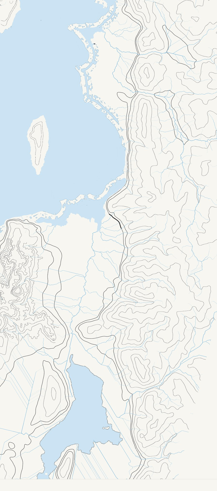
    <figcaption><span class="yr">4,230 ft</span>nobody calls it a flood</figcaption></figure>
  <figure>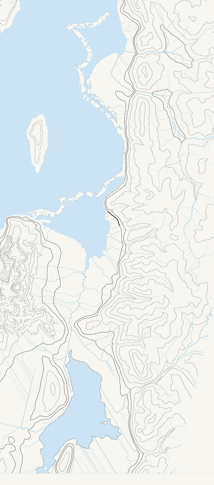
    <figcaption><span class="yr">4,300 ft</span>the beach on 9th</figcaption></figure>
  <figure>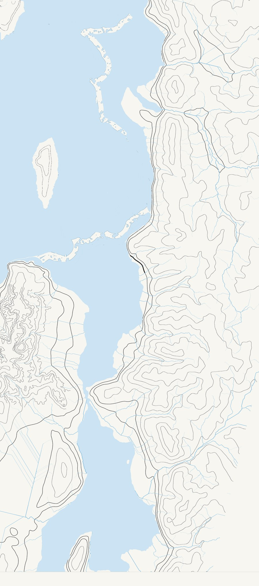
    <figcaption><span class="yr">4,553 ft</span>the head of the angel</figcaption></figure>
</div>

<div class="bars">

<details>
  <summary><span class="t">The press · the flood years</span>
    <span class="d">Three editions, and nothing in any of them is false.</span>
    <span class="more">Learn more</span></summary>
  <div class="body">
    <p>The same paper, a century apart. No irony has been added — the lake is doing what it was asked
    to do, the wall is a good wall, and the advertisement is selling something that exists.</p>
<div class="press">
  <div class="mast"><b>THE GREAT SALT LAKE HERALD</b><span>the flood years · three editions</span></div>

  <article>
    <p class="hed">Wet spring on the west side. Nobody is calling it a flood.</p>
    <p class="dek">The lake is at 4,230. It has been at 4,230 for two years, and the word for that is not flood.</p>
    <p class="byline">Rose Park · staff report</p>
    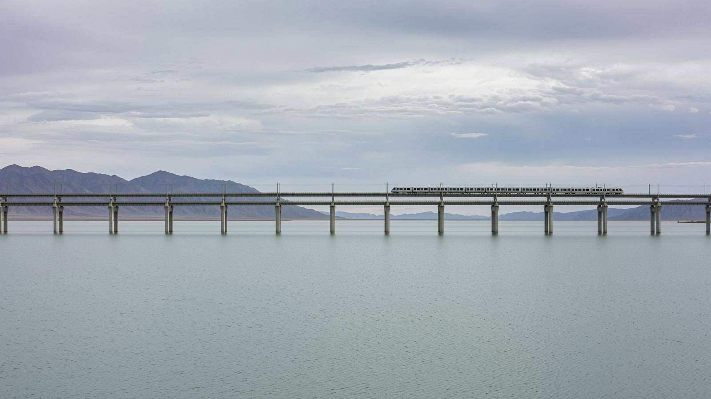
    <figcaption>The line to Ogden, Tuesday. Twelve miles of it now runs on causeway. The rebuild was described in the authority's report as a routine track raise.</figcaption>
    <div class="cols">
      <p>The airport has been sandbagged twice this spring and the north runway is closed again, which the authority describes as seasonal. Rose Park has water in basements along the low streets. The word being used at the district is <em>high water</em>, and the word being avoided is the other one.</p>
      <p><strong>It is difficult to object to any of it.</strong> The lake is doing what it was asked to do fifty years ago and doing it very well. The birds are the best they have ever been counted. The dust emergency that dominated a decade of politics has not been mentioned in eight years.</p>
      <p>The eighteen feet above grandpa's mark arrived over eleven years, which is under two feet a year, which is less than the interannual variation the lake has always had. <strong>No single year was unusual. There is no year anybody can point to.</strong></p>
      <p>The buy-out programme has been extended a third time. Take-up remains low. Assessors continue to record market values along the Jordan bottoms that participants describe as generous.</p>
    </div>
  </article>

  <article>
    <p class="hed">The relocation desk has been open for eleven years and the queue has never been long.</p>
    <p class="dek">Market value, no questions, no deadline. Take-up is under a fifth.</p>
    <p class="byline">1000 West · staff report</p>
    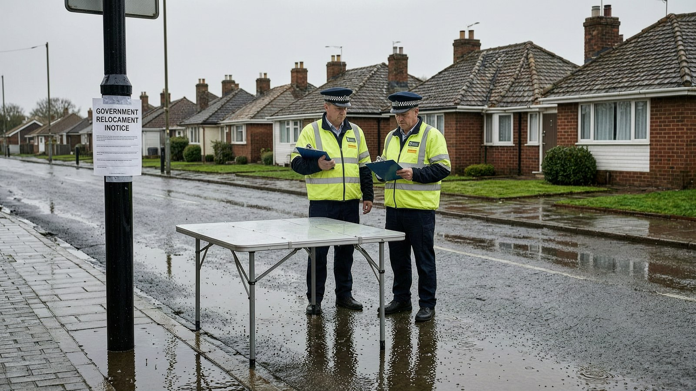
    <figcaption>The desk is set up on the second and fourth week of the month and has been since the programme opened.</figcaption>
    <div class="cols">
      <p>Two officers, a folding table and a laminated notice on the pole outside the old Fairpark chapel. They are there from nine until two and most weeks they process four.</p>
      <p>The terms are not in dispute. <strong>Market value, assessed independently, paid in ninety days, with removal costs and a year of rent if you need it.</strong> Nobody who has taken it has complained in public and the district publishes the valuations.</p>
      <p>The objection is not to the money.</p>
      <p>"They keep telling me it is generous," said a woman on 900 West who has been offered it four times and has a photograph of her grandmother on the porch of the same house. <strong>"It is generous. That is not the thing."</strong></p>
      <p class="note" style="border-left-color:#ddd9cc">⚠ And the valuations are the part worth reading twice. Assessors are recording market values along the Jordan bottoms that have not fallen in eleven years of rising water. There are buyers. <em>There have always been buyers, and nobody at the district can account for who they are or what they think they are buying.</em></p>
    </div>
  </article>

  <article>
    <p class="hed">There are eleven boats tied to the ward and the bishop is still holding meetings.</p>
    <p class="dek">The building is a third under. The steeple is not.</p>
    <p class="byline">Poplar Grove · from the water</p>
    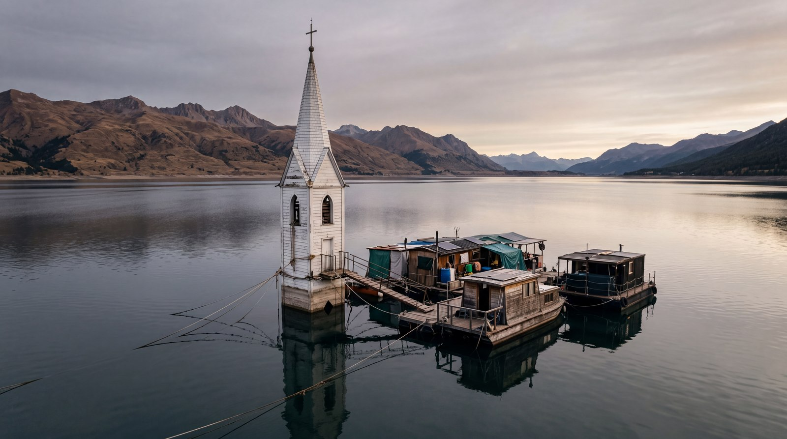
    <figcaption>The ward at 700 South, Sunday evening. The moorings are informal and the district has not moved to clear them.</figcaption>
    <div class="cols">
      <p>They come in on Sunday from the moorings out past the old freeway line and tie up against the tower, which is masonry and does not move, and which has a door at what used to be the choir loft and is now a jetty.</p>
      <p>Attendance is up. That is not a joke and nobody involved treats it as one — <strong>the congregation is larger than it was when the building was dry</strong>, because the people who left the neighbourhood did not all leave the ward.</p>
      <p>"Everybody has a boat now," the bishop said. "That is the whole of it. It is easier to get here than it was to park."</p>
      <p>The diocese position is that the building is deconsecrated and unsafe and the moorings are unauthorised. The bishop's position is that he has not been asked to stop. <strong>Both are on the record and neither has moved for six years.</strong></p>
    </div>
  </article>

  <article>
    <p class="hed">The holdouts jacked their houses up and stayed. It turns out to be cheaper than moving.</p>
    <p class="dek">Twelve to eighteen feet of pile, a boat, and a solar array on the roof. The insurance is the problem, not the water.</p>
    <p class="byline">Glendale · staff report</p>
    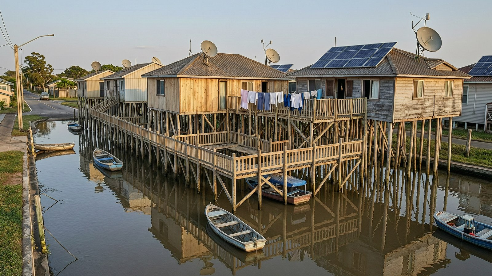
    <figcaption>Glendale, from the causeway. Fourteen houses on this stretch have been raised; four more are jacked and waiting on piles.</figcaption>
    <div class="cols">
      <p>The technique is not new and not difficult. Screw piles, a steel frame, hydraulic jacks, and the house goes up over a fortnight while the family stays in it.</p>
      <p><strong>Against a buyout it is roughly a third of the cost</strong>, and at the end of it you own a house with a boat under it in a neighbourhood where you know everybody, instead of a cheque and an address in Herriman.</p>
      <p>What has failed is the insurance. No carrier writes on the raised stock and the district's scheme excludes any structure altered after the first designation. <strong>So the houses on poles are uninsurable, which means unmortgageable, which means they trade in cash between people who already live here.</strong></p>
      <p class="note" style="border-left-color:#ddd9cc">⭐ Which has produced the only genuinely stable property market in the valley. No leverage, no speculation, no outside money, and a price that has not moved in nine years — <em>because the only people who can buy are the people who are already there.</em></p>
      <p>The district calls it non-conforming occupancy. Everyone else calls it Glendale.</p>
    </div>
  </article>

  <div class="adbox">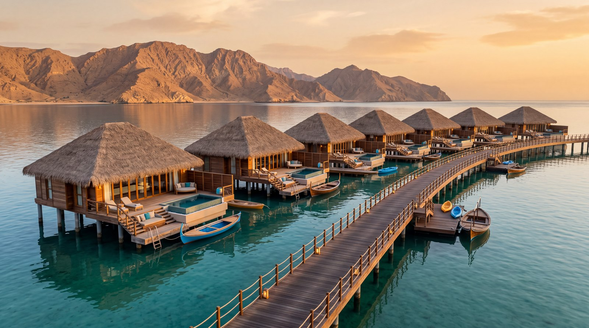
    <div class="inner">
      <p class="brand">The Belt &nbsp;·&nbsp; Overwater Collection</p>
      <h4>Elevated living on the open water.</h4>
      <p class="sub2">Pile-founded residences on the outer channel, boardwalk access, private moorage beneath the deck.</p>
      <ul><li>Twelve to eighteen feet of clearance at design level<span style="color:var(--blue)">*</span></li>
          <li>Fully insured and mortgageable through the district's approved panel</li>
          <li>Solar, battery and water recovery to the residence standard</li></ul>
      <p class="fine"><strong>*</strong> Clearance is stated at design level and is reviewed annually. Structures are certified under the current code and are not comparable to altered stock. Insurance and lending availability apply to certified new-build only. Moorage subject to survey.</p>
    </div>
  </div>

  <article>
    <p class="hed">The beach arrives on 9th East, and the wall goes up where the money starts.</p>
    <p class="dek">Four flat miles from Sugar House to 400 South, and then the bench does the rest for free.</p>
    <p class="byline">900 East · the waterfront desk</p>
    <div class="cols">
      <p>It is a remarkable line. From 2100 South to 400 South, 900 East runs between 4,304 and 4,331 feet — <strong>twenty-seven feet of variation over four miles</strong>, which is as level as anything in this valley gets. Then at South Temple the ground steps to 4,452 and climbs into the Avenues and keeps climbing.</p>
      <p><strong>So the wall only has to exist for four and a half miles.</strong> North of South Temple there is nothing to build. The Avenues bench is already a hundred and thirty feet above the line and it does the job for nothing.</p>
      <p>At forty-five feet mean height it is about a hundred and nineteen thousand cubic yards of concrete floodwall — <em>three point six percent of the Hoover Dam</em>, for a structure that defends the entire east bench of the city.</p>
      <p>The district's engineers describe 900 East as the natural alignment, and it is. It is also the street where the assessed values change, and the properties immediately east of it are the ones with the deep porches, the mature trees and the century of accumulated standing to file objections with.</p>
      <p><strong>Both of those are true and the second one is not being said in the meetings.</strong> The line that is cheapest to build is the line the money is standing behind, and nobody had to arrange that.</p>
    </div>
  </article>

  <div class="adbox">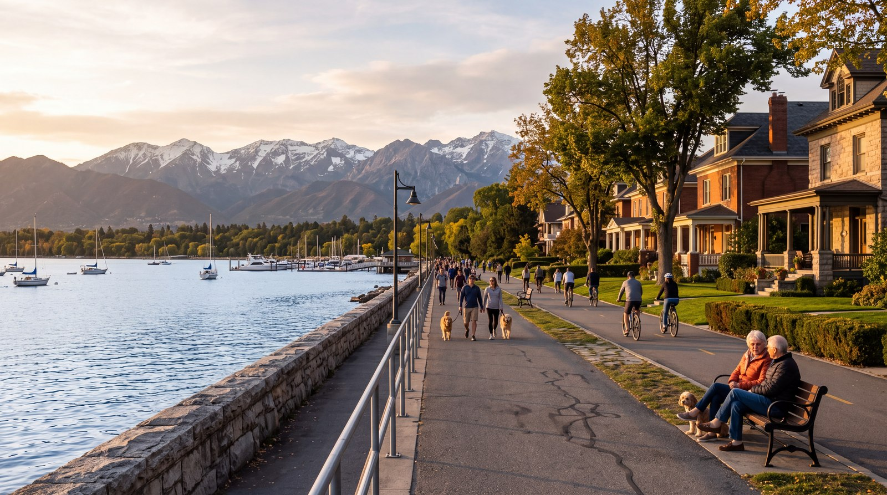
    <div class="inner">
      <p class="brand">The Ninth East Promenade &nbsp;·&nbsp; releases quarterly</p>
      <h4>The good side of the valley. Now with a shoreline.</h4>
      <p class="sub2">Century homes, mature streets, and four and a half miles of protected waterfront thirty feet from the front door.</p>
      <ul><li>Seawall maintained in perpetuity by the district<span style="color:var(--blue)">*</span></li>
          <li>Private moorage available on application · deep water from 1300 South</li>
          <li>Nine minutes to the interchange. The bench behind you does the rest.</li></ul>
      <p class="fine"><strong>*</strong> Maintenance is funded from the frontage assessment and prioritised under the district's published schedule. Crest height is set annually against the forecast lake level. Properties west of the alignment are outside the protected area and are served by the relocation programme. Deep-water moorage subject to survey.</p>
    </div>
  </div>

  <div class="adbox">
    <div class="inner">
      <p class="brand">Temple Square Marina &nbsp;·&nbsp; four ways down</p>
      <h4>4,553 and holding. Come and see it while it is at the surface.</h4>
      <p class="sub2">The lake stopped half a foot below the top of the statue in March. Nobody knows how long it stays there.</p>
      <div class="tiers">
        <figure>
          <figcaption><b>SNORKEL · 12 ft</b>the statue's feet. Mask, fins, a held breath. Wetsuits included — the water is cold in every month.</figcaption></figure>
        <figure>
          <figcaption><b>SPIRE · to 210 ft</b>the descent along the east centre spire. Advanced open-water and a logged deep dive.</figcaption></figure>
        <figure>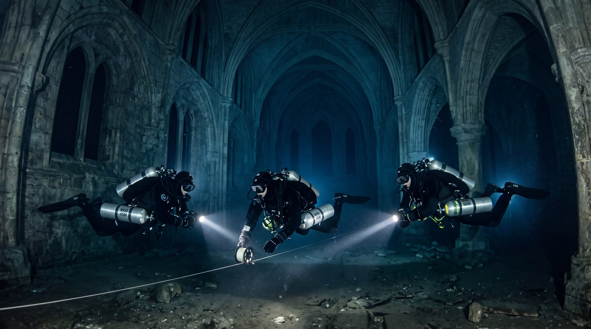
          <figcaption><b>INTERIOR · 222 ft</b>mixed gas, staged decompression, support boat. Deposit and waiver.</figcaption></figure>
      </div>
      <p class="sub2" style="margin:14px 0 12px"><strong>DECK · alongside, dry, all ages.</strong>
      No equipment. A hand on the head, a photograph with the trumpet, twenty minutes at the mooring.</p>
      <ul><li>All departures from the Avenues dock, 4th and C · under-fives free on the deck run</li>
          <li>Snorkel and spire depart 7am and 2pm · slack water, best visibility</li>
          <li>Interior by arrangement only · minimum two, medical within twelve months</li></ul>
      <p class="fine">Contact with the statue is at the visitor's own risk and is not encouraged. The
      structure below the waterline is unsurveyed and unlit; interior routes are line-laid to the
      first chamber only and no further penetration is permitted. Deposit is non-refundable inside
      seventy-two hours. Depths quoted are at the present lake level and change without notice. The
      Ninth East promenade, the seawall and the Liberty basin are 230 to 300 feet below the mooring
      and are not dive sites; the wall is unsurveyed and the basin structures are not stable.
      Conditions on the water are not the conditions at the dock. We sell the sticker at the
      counter.</p>
    </div>
  </div>
</div>
  </div>
</details>

<details>
  <summary><span class="t">The new owners don't know where the meter is</span>
    <span class="d">Retrofitted, sub-leased, and grown over.</span>
    <span class="more">Learn more</span></summary>
  <div class="body">
    <p>There is a question the whole of this wall depends on and nobody on it ever asks: <strong>why
    did the export never resume?</strong></p>
    <p>The other branch has an answer — the ban was relaxed, deliberately, in a meeting, by people
    who could be named. This one does not. Nothing was voted. Nothing was repealed. The pipe simply
    never went back on, for a hundred years, and there is no document anywhere recording the decision
    because there was no decision.</p>
    <p class="big">It rusted open. Then they built over it.</p>
    <p>The intake was retrofitted twice during the second belt. The operating lease went to a
    district that was later folded into another district. The head works ended up inside a parcel
    that was sub-leased, and the sub-lease was assigned. Somewhere in the middle of that the isolation
    valve seized in the open position, which nobody noticed, because <em>a valve that is open is a
    valve that is working.</em></p>
    <p>Then the course was raised. Eighteen feet of graded fill went over the whole strip, as designed,
    as permitted, as inspected. <strong>The meter went under with it.</strong></p>
    <p class="note">⭐ And the meter is the point, not the valve. A valve is engineering and somebody
    eventually walks the line. <strong>A meter is billing.</strong> When it went under the fill the
    account stopped reading, and an account that reads nothing is not a fault — <em>it is a zero.</em>
    Zero is a number the system accepts. It reconciles. It does not raise an exception. It has been
    reconciling for a hundred years.</p>

    <h4>Nobody is at fault and the file proves it</h4>
    <p>The district that installed it no longer exists. The lessee assigned. The assignee was acquired.
    The parcel changed hands three times and each transfer carried a schedule of assets that had been
    copied from the last one. <strong>By the fourth owner the meter is a line item that refers to a
    fitting nobody has seen.</strong></p>
    <p>Every party acted properly. Every transfer was papered. Every inspection passed on the things
    it was scoped to inspect.</p>
    <p class="big">The new owners don't know where the meter is.</p>
    <p>They are not concealing it. They would tell you if you asked, and they have — it is in the
    disclosure, in the schedule, in the same sentence it has occupied since 2081, phrased as
    <em>historic works of uncertain location.</em> It has been read, initialled and filed by every
    solicitor involved in every transaction since.</p>
    <p class="note">⚠ <strong>So the lake rises against an invoice nobody sends.</strong> Not stolen,
    not diverted, not protested. Un-metered — which in a system built entirely out of meters is the
    same as not happening. <em>There is no gauge anywhere in the state reading the number that
    matters, and there is no one whose job it is to notice that.</em></p>
    <p>It is under the eighteenth.</p>
  </div>
</details>

<details>
  <summary><span class="t">The ladder</span>
    <span class="d">Who goes, at what foot.</span>
    <span class="more">Learn more</span></summary>
  <div class="body">
    <p>Every figure measured off the same tiles as the drawing. No ordering was chosen — the ground
    was already in this order.</p>
    <table class="exits">
      <tr><td>4,222</td><td>Rose Park · the airport</td><td>under at every level on this wall</td></tr>
      <tr><td>4,262</td><td>State Street</td><td>4,300</td></tr>
      <tr><td>4,275</td><td>700 East</td><td>4,300</td></tr>
      <tr><td>4,281</td><td>Magna</td><td>4,300</td></tr>
      <tr><td>4,302</td><td>Ogden</td><td>4,400</td></tr>
      <tr><td>4,305</td><td>Murray</td><td>4,400</td></tr>
      <tr><td>4,307</td><td>Grantsville</td><td>4,400</td></tr>
      <tr><td>4,338</td><td>Van Winkle, Murray</td><td>4,400</td></tr>
      <tr><td>4,369</td><td>Sugar House</td><td>4,400</td></tr>
      <tr><td>4,503</td><td>Draper</td><td>4,515</td></tr>
      <tr><td>4,520</td><td>1300 East</td><td>4,600</td></tr>
      <tr><td>4,553</td><td>Provo</td><td>4,600</td></tr>
      <tr><td><strong>4,589</strong></td><td><strong>Sandy</strong></td><td><strong>4,600</strong></td></tr>
      <tr><td>4,716</td><td>Federal Heights</td><td>4,800</td></tr>
      <tr><td>4,784</td><td>the University</td><td>4,800</td></tr>
      <tr><td>4,827</td><td>Cottonwood Heights</td><td>never, on this wall</td></tr>
    </table>
    <p class="note">700 East measures 4,275, which puts it under at 4,300 — the beach arrives on
    9th East, a block further out. Grantsville at 4,307 goes with Ogden and Murray, not with Magna.</p>
    <p class="big">4,600 takes the whole city of Sandy and leaves Cottonwood Heights dry by 227 feet.</p>
  </div>
</details>

<details>
  <summary><span class="t">The hospitals sort like the neighbourhoods</span>
    <span class="d">At the angel you keep all but one. At 4,600 you lose two.</span>
    <span class="more">Learn more</span></summary>
  <div class="body">
    <p>This was checked because the intention was to keep the medical campus dry, and it turns out
    the ground had already decided.</p>
    <table class="exits">
      <tr><td>5,164</td><td>Huntsman Cancer Institute</td><td>dry</td></tr>
      <tr><td>5,005</td><td>the VA hospital</td><td>dry</td></tr>
      <tr><td>4,917</td><td>Primary Children's</td><td>dry</td></tr>
      <tr><td>4,900</td><td>University hospital</td><td>dry</td></tr>
      <tr><td>4,787</td><td>Alta View, Sandy</td><td>dry</td></tr>
      <tr><td>4,590</td><td>St Mark's</td><td>dry by 37 at the angel · under by 10 at 4,600</td></tr>
      <tr><td><strong>4,310</strong></td><td><strong>Intermountain Medical, Murray</strong></td><td><strong>under by 243 at the angel</strong></td></tr>
    </table>
    <p style="margin-top:18px">The entire university campus survives — hospital, cancer institute,
    children's, VA, research. <strong>Sandy loses its west half and keeps its hospital.</strong></p>
    <p class="big">The one that goes is the one that serves the valley floor.</p>
    <p class="note">⭐ Which is the same sorting as the neighbourhoods, arriving in a form nobody
    intended. The institutions on the bench — university, research, cancer, children's — are all
    above 4,700 <em>because that ground was expensive and the institutions that could afford it went
    there.</em> Nobody sited a hospital by elevation. They sited it by land price, and land price is
    elevation with a different name on it.</p>
    <p><strong>St Mark's survives the angel by thirty-seven feet and misses 4,600 by ten.</strong></p>
  </div>
</details>

<details>
  <summary><span class="t">Where to buy for a boat dock</span>
    <span class="d">The Avenues, at the angel. There is a correct answer.</span>
    <span class="more">Learn more</span></summary>
  <div class="body">
    <p>At the angel's level the Avenues stops being a neighbourhood on a hill and becomes a
    shoreline. The waterline cuts across the grid diagonally, because the streets climb east
    <em>and</em> north — in at N Street down on 1st Avenue, and off the western edge entirely by
    5th.</p>
    <p><strong>Everything above 5th Avenue is dry. All of it.</strong></p>
    <table class="exits">
      <tr><td>1st Ave</td><td>dock at N Street · 4,562</td><td>9 ft of freeboard · 20 ft of water off the end</td></tr>
      <tr><td>2nd Ave</td><td>M Street · 4,565</td><td>12 ft · 3 ft of water</td></tr>
      <tr><td>3rd Ave</td><td>K Street · 4,567</td><td>14 ft · 1 ft of water</td></tr>
      <tr><td><strong>4th Ave</strong></td><td><strong>C Street · 4,578</strong></td><td><strong>25 ft · 63 ft of water off the end</strong></td></tr>
      <tr><td>5th and above</td><td>A Street</td><td>never reaches the water</td></tr>
    </table>
    <p class="big" style="margin-top:22px">Fourth and C.</p>
    <p>Twenty-five feet of freeboard, which is enough to be safe in weather, and <strong>sixty-three
    feet of water immediately off the end of the street</strong> — deep-water moorage, at the only
    address on the hill that has it. Second and Third have three feet and one foot of water off the
    end respectively, which is a mooring you walk to.</p>
    <h4>And the gardens were already right</h4>
    <p>Every front garden on that hill was pulled up during the drought years and replaced with rock.
    Not xeriscaping — <strong>0-scaping</strong>. No plants at all. Graded stone over fabric, laid on
    a slope, held at the toe by a course of larger rock along the kerb.</p>
    <p class="big">Which is revetment.</p>
    <p>That is not a comparison. Rock, graded, on fabric, on a slope, with a toe course — it is what
    the district would specify if you asked it to armour a shoreline, and the Avenues installed it
    voluntarily, at their own cost, forty years before the water arrived.</p>
    <p class="note">⭐ <strong>They armoured against drought and it turned out to be armour.</strong>
    Stone does not care which direction the problem comes from. A garden built to survive having no
    water is, without a single alteration, a garden built to survive having too much.</p>
    <p>Nobody on C Street pays for riprap. <strong>They bought it as a lawn replacement.</strong></p>

    <h4>And that is only the bottom of the section</h4>
    <p>The rock is the kerb and the steep first drop. Thirty feet up behind it the same gardens are
    terraced, and the terraces are not 0-scaped — they are <strong>xeriscaped properly</strong>,
    which means watered and shaded planting, drip lines under bark, trees placed to hold the shade.
    Above that, level ground and manicured lawn.</p>
    <p>Draw the section and it reads:</p>
    <table class="exits">
      <tr><td>at the water</td><td>graded rock on fabric, larger course at the toe</td><td><strong>revetment</strong></td></tr>
      <tr><td>+30 ft</td><td>terraced, irrigated, shaded planting</td><td><strong>bank stabilisation</strong></td></tr>
      <tr><td>above</td><td>level manicured lawn</td><td><strong>esplanade</strong></td></tr>
    </table>
    <p class="big" style="margin-top:22px">That is a marina. That is the whole drawing of a marina.</p>
    <p>Armour at the toe, a planted terrace to hold the bank, and level amenity ground above the
    splash line. <strong>It is what a coastal engineer draws on the first sheet</strong>, and it is
    what is already standing on that hill, built over forty years, one front garden at a time, by
    people arranging a view.</p>
    <p class="note">⚠ Nobody planned it and nobody could have. Each of those three layers was
    installed for its own unrelated reason — the rock for the drought, the terrace for the slope, the
    lawn because it is a lawn. <em>The valley did not get a marina district because anybody proposed
    one. It got one because the profile of an expensive hillside garden and the profile of a working
    waterfront are the same profile.</em></p>

    <h4>And the rock was never only about water<span style="color:var(--blue)">*</span></h4>
    <p>This is the first hostile architecture on this page and it should be marked as such, because
    it does not look like any.</p>
    <p>Graded stone over fabric has a second property that is never in the planning submission and is
    known to everybody who specifies it. <strong>A body cannot rest on it.</strong> You cannot lie
    down on it, you cannot sit on it for long, and nothing about it invites you to stop. Tacoma spent
    a hundred and sixty-three thousand dollars on a thousand boulders and called it landscaping.</p>
    <p class="big">And it filters by body, which almost nothing else does.</p>
    <p>An electric chair does not cross loose rock — the castors dig and the drive wheels spin, and
    the person in it is simply somewhere else now. A walker sinks and jams. A cane finds no purchase
    and skates. <strong>And diabetic neuropathy means you cannot feel where your foot has landed</strong>,
    so a surface that shifts under load is not merely uncomfortable, it is the surface on which you
    fall.</p>
    <p class="note">⚠ <strong>There is no sign, no gate, no fence and no rule.</strong> Nobody is
    excluded from anything. The garden is drought-responsible, award-eligible, and cheaper than turf
    — and it is also a ramp nobody can use, installed at the front of every house on the street, for
    reasons that are all true. <em>Deniable because it is landscaping.</em></p>

    <h4>Which is the happy coincidence, and it runs both ways</h4>
    <p>The same property does both jobs. Loose graded stone on a slope resists a body <em>because</em>
    it resists scour — it moves under point load and locks under sheet load, which is exactly why it
    holds a bank and exactly why it will not hold a wheel.</p>
    <p class="big">The surface chosen so nobody could rest on it is the surface that armours the
    shore.</p>
    <p>Neither was designed. Both are real. <strong>And the street that gets the marina for free is
    the street that got the hostile surface for free, from the same forty years of gardening, for
    reasons nobody ever had to write down.</strong></p>
    <h4>And the wall on that hill is horizontal</h4>
    <p>Everything above describes the section. The section is not the exclusion. <strong>The
    exclusion is the plan.</strong></p>
    <p>South Temple to the top of the Avenues is a mile and a bit and <strong>six hundred feet of
    climb.</strong> Drawn flat that is a fifteen-minute walk and there is no barrier on it anywhere —
    no gate, no fence, no sign, no rock you cannot step over. Every foot of it is public and every
    foot of it is open.</p>
    <p class="big">The gate is the distance.</p>
    <p>It is a march with nowhere to stop. No bench, no shade, no soft ground, nothing to sit on for
    a mile — because the surface for that entire mile is the graded stone, and graded stone is
    specified precisely so that nobody stops on it. <strong>You are not turned back. You simply run
    out before the top.</strong></p>
    <p class="note">⚠ Three blocks up that grade is an hour with diabetes. A powered chair is on
    reserve by the fourth. And the hospital sits halfway up the hill, which is where the ambulance
    goes and which is not a coincidence — <em>infrastructure that collects failures gets built where
    the failures happen.</em></p>

    <h4>And the lawns begin exactly where the chair stops</h4>
    <p>Rock, then planting, then lawn. That is a gradient of water spending. It is also a gradient of
    income. <strong>And it is a gradient of body, and all three are the same gradient</strong> —
    which is measurable on a real street with nothing but eyes and twenty minutes of climbing, if you
    can climb it.</p>
    <p>The grass starts at the elevation where the powered chair gives out. Nobody set that line.
    Nobody could have set that line. <em>It is where the money got high enough to afford grass, and
    the money got high because the climb kept everybody else below it.</em></p>
    <p class="big">Of every wall in this project, it is the only one that filters by body.</p>

    <h4>And then, above C, everything you needed is there</h4>
    <p>The apartment blocks at the top of the hill have alcoves. Green space between them, planted
    and irrigated. <strong>Fountains. Benches.</strong> Water bowls at ground level for dogs, plumbed
    and metered, paid for out of the private residents' association.</p>
    <p>The walkways are levelled. They are resurfaced on a cycle, they have handrails where the
    gradient calls for them, the crossfall is right, the kerb cuts are right, the tactile paving is
    right. <strong>Every route up there is fully compliant.</strong></p>
    <p>None of that is cynical and none of it should be read as cynical. Somebody specified it,
    somebody paid for it, and it is genuinely good — the best-maintained pedestrian environment in
    the city, and the only one with somewhere to sit every eighty feet.</p>
    <p class="big">It begins about forty feet above where a powered chair runs out.</p>
    <p>There is not a bench on the climb. There is not a fountain, a level rest, a shaded stop or a
    soft surface anywhere in the mile below — and then, past the last address a person who needs
    those things can reach, all of them, at once, in quantity, maintained beautifully, in perpetuity,
    at private expense.</p>
    <p class="note">⭐ <strong>The benches start where you stop needing one.</strong></p>

    <h4>And nothing about that is a violation</h4>
    <p>Accessibility law governs the facility. It measures from the door: the entrance, the route
    inside, the lift, the bathroom, the counter height, the parking bay. <strong>It does not govern
    the mile of public street you have to survive to reach the door.</strong></p>
    <p>So the building is compliant. The route inside it is compliant. The alcove, the seating, the
    fountain and the tactile paving are all compliant, and every one of them was inspected by
    somebody doing their job properly.</p>
    <p class="big">Total compliance. Zero access. No clause broken anywhere.</p>
    <p class="note">⚠ Which is the same shape as every other wall in this work and the most exact
    version of it yet. <em>The exclusion is never in the drawing.</em> It is not in the deed, the
    code, the plan or the inspection report — <strong>it is in six hundred feet of public street that
    nobody built, nobody owns and nobody is required to make passable</strong>, and the ramp at the
    top of it is perfect.</p>

    <h4>And nobody up there is walking anywhere</h4>
    <p>Watch the promenade for an hour and count. Runners. Dog walkers. Strollers being pushed by
    people who drove to the top to push them. A couple photographing the view, and somebody filming
    themselves doing the loop.</p>
    <p><strong>Almost nobody on that hill is on foot in order to arrive somewhere.</strong> They are
    on foot as an activity, having got there by car — which is the same arrangement as Los Angeles
    and reads the same way from a bench.</p>
    <p class="big">So the amenity is not being used as relief. It is being used as equipment.</p>
    <p>The bench is where a runner puts a foot up to stretch. The fountain is for the dog. The level
    resurfaced walkway is for the pram and the running form, and the handrail is a thing to touch on
    the way past. <strong>Every element of it was specified for a body that is struggling and every
    element of it is used by a body that chose the gradient on purpose.</strong></p>
    <p class="note">⭐ And it photographs beautifully, which is the last piece. <em>The walkability
    is the content.</em> The most photographed pedestrian environment in the state is the one whose
    pedestrians all arrived by car, forty feet above the point where the people it was built for
    turned around.</p>

    <h4>And the alignment is not a coincidence<span style="color:var(--blue)">*</span></h4>
    <p>An earlier note on this page said the line follows the gardens rather than the churches. That
    is wrong, and it is wrong in the direction that matters.</p>
    <p><strong>The gradient on that hill was set by sightlines.</strong> The lots were valued by what
    they could see, from the 1850s, and what they could see was the temple. The view set the price;
    the price selected the elevation; the elevation is now the waterline. So the marina profile, the
    armoured bank, the dry side of the wall and the address of the best dock in the valley
    <em>all descend from a religious sightline surveyed a hundred and seventy years before anybody
    wrote a bill.</em></p>
    <p class="note">⭐ Which is not a claim about the church and is not offered as one. <strong>The
    church is simply upstream of the price, and the price is upstream of the water.</strong> Any
    fixed object that a city agrees to look at will do the same thing — a cathedral, a harbour, a
    capitol, a mountain. Put a thing worth seeing at one end of a slope and the slope sorts itself
    by who can pay to see it, and then, a century and a half later, the lake arrives and sorts the
    same people again in the same order using nothing but elevation.</p>
  </div>
</details>

<details>
  <summary><span class="t">Counsel · on letting nature take its course</span>
    <span class="d">The pumps were already running. Nobody switched them on.</span>
    <span class="more">Learn more</span></summary>
  <div class="body">
    <div class="counsel">
      <p><b>Vogel</b> The phrase in the record is <em>letting nature take its course</em>, and I want
      to start by saying that it is not a euphemism. Nobody flooded the west side. There is no order,
      no breach, no release, no diversion and no defendant. The state declined to act and the water
      did the rest, <strong>which is the difference between a decision and a condition.</strong></p>

      <p><b>Trawman</b> Then I will ask one question and I will only ask it once. <strong>What course
      was nature taking before anybody let it?</strong></p>

      <p><b>Vogel</b> Its own.</p>

      <p><b>Trawman</b> The valley has been pumped since 1965. The low ground drains by gravity to the
      Surplus Canal and to the Jordan, and a gravity outfall works only while the water it discharges
      into is lower than the pipe. Above that line the outfall is not a drain.</p>

      <p class="big">It is an inlet.</p>

      <p><b>Trawman</b> So from 4,206 the storm system on the west side runs on plant. Not to hold the
      lake off — the lake was never the water in those basements. <strong>The pumps are there to let
      the neighbourhood's own rain out against a lake that is now higher than the door.</strong>
      Rose Park does not flood from the lake. It flooded from its own weather, because the way out
      stopped working.</p>

      <p><b>Vogel</b> Nobody switched them off.</p>

      <p><b>Trawman</b> No. That is correct and it is the entire mechanism. The plant reached the end
      of its design life on schedule, in a report, and renewal was appraised the way renewal is always
      appraised. <em>It did not clear.</em> It was deferred to the following cycle, and it was
      deferred eleven cycles running, and every one of those deferrals was individually defensible by
      a person acting properly.</p>

      <p><b>Vogel</b> Give the appraisal, since it is public.</p>

      <p><b>Trawman</b> Both of them. Same method, same discount rate, same damage coefficient —
      <strong>0.75% of assessed value a year</strong> — same office, and the two files are eleven
      days apart.</p>

      <table class="exits">
        <tr><td>0.68</td><td>west-side outfall plant · renewal</td><td>$1.9 bn · protects $9.4 bn</td></tr>
        <tr><td><strong>5.67</strong></td><td><strong>the Ninth East wall</strong></td><td><strong>$2.9 bn · protects $78 bn</strong></td></tr>
      </table>

      <p><b>Trawman</b> The threshold is 1.0. <strong>The plant that did not clear was a billion
      dollars cheaper than the wall that did.</strong> Nothing was weighted, nothing was fixed and
      nobody put a thumb anywhere near it. The only term that differs between the two files is the
      assessed value of the ground behind the works, and the appraisal is doing exactly what it was
      built to do — <em>it protects value in proportion to value.</em></p>

      <p><b>Vogel</b> Then let me defend the wall properly, because my colleague is about to be
      generous about it and I would rather have it on the record from the side that means it. The
      Ninth East wall was a sound investment and it stayed sound for ninety years.</p>

      <p><b>Vogel</b> <strong>$2.9 bn to build. $40.6 M a year to maintain. Ninety years of both is
      $6.55 bn.</strong> Against that, moorage, deck bookings, the promenade concessions and the
      frontage levy returned <strong>$25.4 bn</strong> over the same period. <em>Three dollars ninety
      earned for every dollar spent, before a single dollar of avoided damage is counted at all.</em>
      That is not a subsidy and it is not a folly. It is one of the best-performing pieces of public
      works this state has ever built, and it paid for itself in year nineteen.</p>

      <p><b>Trawman</b> I concede all of it and I will go further than my colleague did. It was the
      correct decision on the correct method with the correct arithmetic, it was audited four times,
      and if the file came to me tomorrow I would sign it. <strong>There is no version of this
      hearing in which the wall is the wrong answer.</strong></p>

      <p><b>Trawman</b> And it was appraised in the same room, in the same fortnight, by the same
      method, as the plant that would have kept the water out of Poplar Grove — <em>and the method
      is not corrupt, it is just a mirror.</em> The ratio is the price gradient with a decimal point
      in it. The price gradient is the sightline. We have already established where the sightline
      came from and it was surveyed in the 1850s.</p>

      <p><b>Vogel</b> Then take us back to the first wall, since my colleague has spent this entire
      hearing on the last one. There is a version where none of this happens. It is drawn. Year
      fifty. The lake is at grandpa's mark, the pipe runs, the export is priced, the ban holds, and
      nobody is under anything.</p>

      <p><b>Trawman</b> It is a good drawing and I want it built.</p>

      <p><b>Vogel</b> Then what are the odds it stays that way.</p>

      <p><b>Trawman</b> The instrument says <strong>in perpetuity.</strong> That is the only term in
      the whole bill that was never costed. Give the regime a 99% chance of surviving any given year
      — which is generous, and better than the actual record of every water compact on this
      continent — and the exponent does the rest.</p>

      <table class="exits">
        <tr><td>60.5%</td><td>survives 50 years</td><td>the drawing</td></tr>
        <tr><td><strong>36.6%</strong></td><td><strong>survives 100 years</strong></td><td><strong>a grandchild</strong></td></tr>
        <tr><td>0.66%</td><td>survives 500 years</td><td></td></tr>
        <tr><td><strong>0.0043%</strong></td><td><strong>survives 1,000 years</strong></td><td><strong>call it zero — and perpetuity is not 1,000 years</strong></td></tr>
      </table>

      <p class="big">A hundred years at thirty-seven. Zero at a millennium.</p>

      <p><b>Vogel</b> And at ninety-nine point nine.</p>

      <p><b>Trawman</b> Then it is the same number one decimal place further out. <strong>A tenfold
      cut in the annual failure rate buys exactly tenfold the time and hands you back the identical
      odds</strong> — thirty-seven percent, at a thousand years instead of a hundred. Add another
      nine and it is ten thousand years at thirty-seven percent. Add nines forever and it converges,
      and what it converges to is <strong>1/<em>e</em></strong> — 36.8%, a constant, which is not a
      policy and cannot be legislated at.</p>

      <p><b>Trawman</b> <em>The curve never bends. It only slides.</em> You cannot buy perpetuity
      with reliability, you can only buy an exponent, and the bill asked for perpetuity without
      naming one. Nothing with an annual failure rate above zero survives forever, and no institution
      has ever had one at zero.</p>

      <p class="big">It is a rounding error.</p>

      <p><b>Vogel</b> My colleague has just argued against his own bill.</p>

      <p><b>Trawman</b> He has not, and I would ask that this be minuted carefully, because it is the
      one thing on this page I care about being read correctly. <strong>A rounding error is not an
      argument against building it.</strong> Fifty good years is fifty good years. The people who get
      them are real, they are alive at the time, and they are not made retrospectively worse off by
      the fact that the arrangement eventually lapses. <em>Nothing anybody has ever built was
      permanent, and the standard is not permanence, because the standard has never once been
      permanence for anything.</em></p>

      <p><b>Vogel</b> Then say what the standard is.</p>

      <p><b>Trawman</b> How long, and how good, and who was inside it. That is the whole of it. The
      novel my colleague keeps in his desk puts it better than the actuarial tables do, and it is not
      being quoted here as a joke.</p>

      <blockquote class="say">
        <p>On a long enough timeline,</p>
        <p class="q">the survival rate for everyone drops to zero.</p>
      </blockquote>

      <p><b>Vogel</b> That is from a novel.</p>

      <p><b>Trawman</b> It is an actuarial statement and it is correct in both places. It is correct
      for a person, for a district, for a wall, for an instrument, and <strong>for any member of any
      species</strong> — including the one this bill was written to save, which was gone from this
      lake by 4,216 and had been here for a very long time before that. The brine shrimp did not fail
      at anything. <em>It ran out of timeline, which is what everything does.</em></p>

      <p><b>Vogel</b> Then let me put the ending in, since my colleague has walked us to the far end
      of the axis and left us standing there, and since the honest version of the ending is not grim
      at all. <strong>A great many people had a very good century.</strong> The wall held. The
      promenade filled every evening it was warm. The water was extraordinary in the last hour of
      light and there are four generations of photographs of it. Fifty thousand people learned to
      sail on a lake their great-grandparents drove past holding their noses.</p>

      <p><b>Vogel</b> <strong>A lot of people had a lot of fun while it lasted</strong>, and I decline
      to say that with any irony whatsoever, because it is the part of this record that is
      unambiguously and checkably true.</p>

      <p><b>Vogel</b> And the resident staff accommodation on the dry side is better than what they
      had in Rose Park. I have been in it. Heated, inspected, level access from the street, a drying
      room, a garden, and a view of the water that people pay a great deal for four hundred yards
      further up. It is better housing than the housing it replaced <em>by every measure the housing
      officers use, and they use the same measures everywhere.</em></p>

      <p><b>Trawman</b> The buy-outs were paid.</p>

      <p><b>Vogel</b> In full, at assessed market value, uncontested, and everyone involved agrees
      they were generous — I have never heard anybody say otherwise, including the people who took
      them. The only difficulty was ever timing. The money was assessed on the wet side of a wall
      that had already been signed, and everything above 4,331 went up fivefold in the eleven years
      it took to build. <strong>Nothing was withheld from anyone. It simply did not reach.</strong></p>

      <p><b>Vogel</b> Which is why the lodging matters, and why the district is right to be proud of
      it, and why the officers explain the terms so carefully at the door. <strong>The tenancy runs
      with the post.</strong> That is a protection and not a condition — it cannot be ended while the
      job continues, which is more security than a tenancy at will and considerably more than a
      mortgage. <strong>For now</strong> there is nothing else on the dry side in any case, and the
      officers say so at the door, which is why the terms have never once been queried.</p>

      <p><b>Trawman</b> It is a protection.<span style="color:var(--blue)">*</span></p>
    </div>

    <p class="ope"><b>Ope's note</b><span style="color:var(--blue)">*</span> &nbsp;until the post no
    longer requires water, or food, or sleep.
    <span class="sig">This note was made with the assistance of an AI, in a cloud, at a data centre,
    that is hopefully not coal-powered.</span></p>
  </div>
</details>

</div>

</main>

<footer>
  Drawn from public elevation data. Deterministic — no model, no seed, no interpretation in the
  geometry. Same input, same output, forever.<br>
  <code>dem.py → earth.py → vector.py → basin.py</code>
</footer>

<script>
/* ⭐⭐ AND THE ADVERTISEMENTS CAN BE SWITCHED OFF, which is the one control on this page that is
   also an argument. The ads are not decoration and they are not a joke — they are the same facts as
   the articles, aimed at a buyer instead of a reader. Turning them off leaves the journalism intact
   and entirely unchanged, and that is the demonstration: **nothing in the reporting had to be false
   for the prospectus to work.** The choice is the reader's, and the page remembers it. */
(function () {
  var b = document.getElementById('adtog'), s = document.getElementById('adstate');
  function set(off, save) {
    document.body.classList.toggle('noads', off);
    b.setAttribute('aria-pressed', off ? 'true' : 'false');
    b.textContent = off ? 'Show advertisements' : 'Hide advertisements';
    s.textContent = off ? 'Advertisements hidden — the articles are unchanged.'
                        : 'Advertisements shown — they are part of the piece.';
    if (save) try { localStorage.setItem('lbw-noads', off ? '1' : '0'); } catch (e) {}
  }
  var saved = null;
  try { saved = localStorage.getItem('lbw-noads'); } catch (e) {}
  set(saved === '1', false);
  b.addEventListener('click', function () {
    set(!document.body.classList.contains('noads'), true);
  });
  /* the second wall carries the same switch, and the two stay in step — one preference, two
     places to reach it. */
  var b2 = document.getElementById('adtog2'), s2 = document.getElementById('adstate2');
  function mirror() {
    var off = document.body.classList.contains('noads');
    b2.setAttribute('aria-pressed', off ? 'true' : 'false');
    b2.textContent = off ? 'Show advertisements' : 'Hide advertisements';
    s2.textContent = off ? 'Advertisements hidden — the articles are unchanged.'
                         : 'Advertisements shown.';
  }
  if (b2) {
    mirror();
    b2.addEventListener('click', function () {
      set(!document.body.classList.contains('noads'), true); mirror();
    });
    b.addEventListener('click', mirror);
  }
})();
</script>
